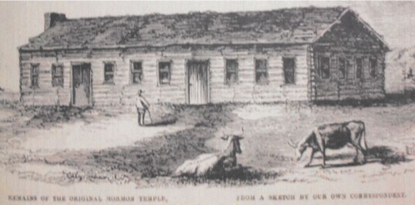
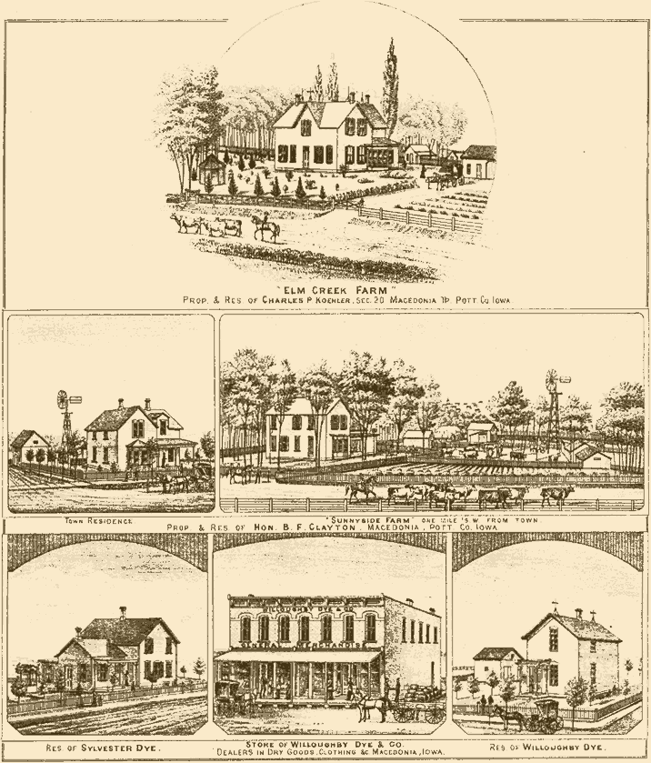
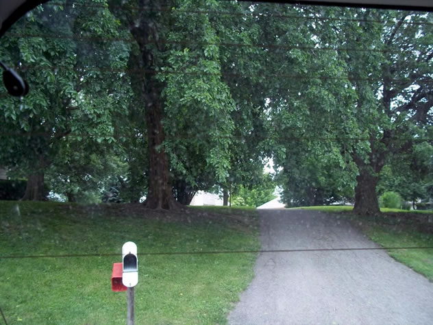

Pottawattamie County
Allred's Camp
.jpg)
Some of the settlement's early residents were:
Samuel, Mary, William, Maria, Sarah, Caroline, and Mary Wood; John, Primrose, Sarah, and Andrew Shields; Lucious Rebecca, Augustus, Perry, Emaline, and Lucy Bingham; William Sr., Maria, Joseph, Henry, and Hyrum Watkins; William Jr., Mary, Susan, and Maria Watkins; Richard, Mary, Martha, Richard, John, Rachel, and Jacob Spencer; James Sr., Sarah, Martha, James Jr., and William Brackin; David, Cyntha, Mary, Elizabeth, David, Margaret, Rebecca, Jane, and Cyntha Osborn; David, Martha, John, Ancel, Delazou, Chloa, Ransen, and Albeou Young; William M., Orissa, William, Mary, Byron, and Marrin Allred, and Mary Corbage. (1)
William Moore Allred wrote, “We stayed in Winter Quarters one winter, then we moved back to the east side of the River, to where my Father lived. On the 29th of May 1847 our second son Byron Harvey was born. I had to go off to Missouri to work and one time when I started Byron was such a sickly puny little thing, but when I came back he was so large and fat I did not know him, an it was a long time before he looked natural . . . (1847) In 1847 the Pioneers went to Salt Lake Valley and back in Dec 19 my Br. Reddick got back from the Battalion. He had a very hard time of it. He had to eat raw hide and mule meat and mule brains."
“(1848) In this year my Father and the most of his family got ready, and in the spring of 1849 they all crossed the plains but Redden and I. Father sold his place to me. While I lived at this place Oliver Cowdery came back to the Church, and I was present when he spoke to the Conference, but he went back to Missouri and died before he had the opportunity to come to Salt Lake."
“(1850) I think it was in this year that Orson Pratt came from England on a visit, as part of his family were here and part in England, (as he was there on a Mission). He was here at the April Conference, and it was so very dry the people began to have great fears about their crops. When he was called upon to open the Conference with prayer, he prayed for rain, and it was as clear as it could be, not a cloud to be seen, and just as the Conference was dismissed, it commenced to sprinkle rain, (the meeting was in a grove), and he and I started to walk to my house (8 miles) and when we got home we were as wet as though we had been in a River."
“Marvin Adelbirt, was born at this place on the 13th of August 1849. While living at this place I worked with Samuel Wood at wagon work and after I left the
shop, I made the first wagon I ever owned from Bottom to Top (excepting the iron work) and painted it. I mad my yokes and bows. I raised a yoke of steers
and broke them to be quite handy, then I got a yoke of oxen of Orson Pratt, and then I had two cows yoked up, and that completed my team.” (2)
Josiah Hammer married Elizabeth Osborn at Allred's Camp on 31 August 1851. (3)

Allred’s Camp, as viewed from Hazel Dell Church grounds
From the history of the life of William Lampard Watkins it was written, “In the spring as soon as the feed was good enough we continued our journey to Council Bluffs arriving there early in July and located on a branch of Little Pigion (sic), known as Allred's Camp. Here we found my brother-in-law Joseph Hammond, and his family and his wife's parents and relatives all preparing to leave for the West. We occupied their cabins and went into basket making and a little farming, in order to obtain an outfit for future traveling. The Saints had gathered here quite rapidly and Kanesville was the principal location with apostle Orson Hyde presiding. We were very prosperous in the disposal of all the baskets we could make while located here, making frequent trips into Missouri with them and exchanging them for such things as we needed. We employed Brother Lucious Bingham to take several loads and sell on commission. My father having been taken sick while at Garden Grove, when the place was discontinued, was taken down to Marysville in Missouri, a number of the Saints going to the same place. It was thought by some that my father was dead, but Bishop Evans said not so and through the exercise of faith and prayer he finally recovered."
“My father-in-law, his daughter Sarah and myself in 1848 went into Missouri and camped on the Nodoway river for a short time making baskets. It being twenty miles from the place where my parents were, I concluded to go out and see them. In those days twenty miles seemed a long distance. After walking about six miles I came to where there was a grocery store and a few scattered houses, also a saloon. There was a man there with a team. He had been to the Nodoway Hills and was going within four or five miles of Marysville. He said he would be glad of my company and I certainly was glad of a chance to ride. The man, however, hung around the store and occasionally drinking with friends, he got very drunk and did not know what he was doing. They got him into the wagon and gave me directions as to where he lived and I drove the team to his home. His folks were glad he got home safely, and I remained with them over night. The next morning after breakfast I started to go to Marysville. Had gone about a couple of miles when whom should [I] meet but my parents and brothers on their way moving to St. Joseph Missouri . It did not take much persuading to have them go to our camp on the Nodoway river. They remained with us till we got ready to return home, then we all went to our home on the Little Pigeon. My parents settled in another grove but a short distance from us and fenced in a piece of timber and built a log cabin."
“On August 30, 1848, my daughter Susan Elizabeth was born. This was a very favorable place for the Saints to prepare for their journey. Travelers to California coming along made a fine market for all the corn we could raise and bringing a good price. A great many began to make good improvements and much business was done at Kanesville. We were getting along comfortably considering the circumstances and the people were generally quite satisfied with the location. I engaged an outfit and started for the west in the spring of 1850. Daughter Maria Lovisa was born August 10, 1850. In 1851, the missionaries were sent by President Young urging the saints to hasten on to Salt Lake. Apostle Benson was laboring in our vicinity, it being decided to vacate Council Bluffs completely and all were required to unite and leave. The next spring I had on my claim a nice lot of timber suitable for wagon building, also for ox bows, and wagon bows, and I worked on the same to good advantage from this seasoned wood and by changing work succeeded in building my own wagon which brought me across the plains, in company with my father and mother and three brothers.” (4)
.jpg)
Hazel Dell Church, near the site of Allred's Camp
Alexander Neibaur says in his diary that he and his party “Reached Father James Allreads
camp” sometime around July 20, 1847. They only stayed until 28 July. (5)
William M. Allred was the settlement's Frontier Guardian representative. (6)
“We have the names of some forty or fifty other settlements in southwestern Iowa . Little of these
remains, however, but their name and memory and a half-rotted squared log occasionally
plowed up. Strictly, they were not villages or even hamlets, merely the collection within easy
distance of a handful of farm houses in a grove on a creek, with a school or church, and perhaps
a mill or trader's stock. They resembled rather the ideal farm communities or settlements of some
modern sociologists.” The footnote at this point lists Allred's Camp as one of those locations
described in this paragraph. (7)
Notes:
- 1850 United States Federal Census, Pottwattamie County, District 21, pp. 240-243.
- William Moore Allred, A Short Biographical History and Diary of William Moore Allred, 1819-1901, pp. 4-5. MSS 4110 L. Tom Perry Special Collections, Harold B. Lee Library, Brigham Young University, Provo, Utah.
- Pottawattamie County Marriage Records.
- William Lampard Watkins, A Brief History of the Life of William Lampard Watkins from His Birth Until His Arrival in Utah on September 12th,1851. http://heritage.uen.org/companies/Wc87bf15d543a5.shtml accessed December 6, 2016.
- Alexander Neibaur, “Diary and Family Biographies, 1841-1972,” folder 2, pp. 19-20. Unpublished manuscript, L. Tom Perry Special Collections,Harold B. Lee Library, Brigham Young University, Provo, Utah.
- Orson Hyde, ed., Frontier Guardian (4 April 1851).
- Clyde B. Aitchison, The Mormon Settlements in the Missouri Valley. A Paper Presented by Clyde B. Aitchison, of Council Bluffs , Iowa, before the annual meeting of the Nebraska State Historical Society, January 11, 1899 (Lincoln, Nebraska, 1907), 23.
Benson's Mill
Location
This settlement was called many different things throughout its history: Benson’s Mill, Bullock’s Mill, and Benson’s Settlement. Its longitude and latitude are 41°24'8"N 95°50'12"W (1).
It is located “…two miles north, one mile east of Crescent, Iowa atop a ridge north of gravel road in vicinity of 1846-1853 LDS communities of Hazel Grove and Big Pigeon” (2).
Members of the church who resided here are thought to be a part of the Big Pigeon Branch. Benson’s Settlement was “…centered around Jerome Benson’s mill (the settlement was also known as ‘Benson’s Mill’); close to Big Pigeon, but separate. After the mill was purchased by B.K. Bullock in 1850, it was called ‘Bullock’s Mill’ (not to be confused with Bullock’s Grove)” (3).
Bullock’s Mill was one and a half miles from Henry A. Terry’s farm in Farmersville (4).
Benson’s Settlement was located on Big Pigeon Creek about eight miles north of Kanesville. Today it’s a part of Crescent City, Iowa. Benson’s Tabernacle was a “public building in the Benson Settlement; monthly meetings of the seventies were held on the third Sunday in the building, beginning Sunday, 17 November 1850” (5). “One early report said the Kanesville Tabernacle was too small for the crowd attending the December 24-27, 1847 Church conference at which Brigham Young was first sustained President in the Pigeon Creek Tabernacle” (which is most likely the Benson Tabernacle) (6).
History
“MILL FOR SALE
THE well known GRIST MILL belonging to JEROME M. BENSON, situated on “Big Pigeon”, about eight miles north of this place offered for sale on the most reasonable terms. There are two runs of burrs and a bolt of manufacturing flour of the best kind, now in successful operation. This mill has all the grinding it can do by day and by night, and there is also a fine chance for erecting a Saw Mill on the same bank. Connected with the mill is a fine little farm about thirty acres under good fence. If anyone wishes a great bargain, please call upon the subscriber on the premises.
JEROME M. BENSON
Kanesville, March 21—2m” (7).
“NOTICE.
THE undersigned have this day purchased the Grist Mill and Saw Mill formerly owned by Jerome M. Benson, and intend to put the same in complete repair, and will endeavor to accommodate customers as well as at any other establishment of the kind of this county.
A.K. Williams
Kanesvill, Jan. 22, 1851” (8).
“The Conference at the Tabernacle near Benson’s Mill, held on Saturday and Sunday, [May] 5th and 6th [1849] inst., was well attended. Though it was stormy on Saturday, and lowering on Sunday morning, a very great number of persons ventured out. Most excellent discourses were delivered by Elders Smith, Benson, and Joseph Young. The saints were greatly edified and comforted. Joy and gladness beamed in almost all countenances” (9)
Marriages
Jesse Williams Fox married Eliza Jerusha Gibbs on June 2, 1849 (10).
Residents
Jerome Messenger Benson, 40; Mary Rhodes Benson, 39; Eveline Benson, 15; Louisa Keziah Benson, 10; Amelia Benson, 5; Jerome Messenger Benson, 2.
Although it is unknown which company the Benson family was a part of as they traveled west to Salt Lake, records do indicate that they left for and arrived in Utah in 1851 (11).
Jesse Williams Fox, 30; Eliza Jerusha Gibbs, 19. Jesse and Eliza were members of the Samuel Gully/Orson Spencer Company. They departed from Kanesville on May 28, 1849 and on September 22-25, 1849; they arrived in the Valley (12).
Alva Benson, 52; Cynthia Vail Benson, 51; David Benson, 31; Elsa Ann Curtis, 26; Lucy Benson Wilson, 21; Moroni Benson, 19; Polly Elvira Benson, 13; Cynthia Elizabeth Benson, 11; Phoebe Keziah Benson,1. Alva Benson and his family traveled west with the Uriah Curtis Company, which departed on June 28, 1852 and arrived on September 29 and October 1, 1852 (13).
Notes
- http://carto.byu.edu/mp/#
- Gail G. Holmes, Old Council Buff(s): Mormon Developments, 67-68. http://mapntour.com/viewer.php?c=206
- Brandon Plewe’s Summary on “Middle Missouri Valley Settlements, 1846-1853.
- Hyde, Orson. “Advertisements.” Frontier Guardian.Vol. 3. No. 2. February 21, 1851.
- Hyde, Orson. “Places Mentioned in the Frontier Guardian”.
- Holmes, 67-68.
- Hyde, Orson. “Advertisements.” Frontier Guardian.Vol. 1. No. 6. April 18, 1849.
- Hyde, Orson. “Advertisements.” Frontier Guardian. Vol. 3. No. 2. February 21, 1851.
- Hyde, Orson. “Conference.” Frontier Guardian. May 16, 1849. Vol.1. No. 8.
- Pottawattamie County Marriage Records. May 30, 1849.
- “Mormon Overland Trails: 1847-1868: Unknown Company (1851).” https://history.lds.org/overlandtravels/companyDetail?lang=eng&companyId=352
- “Mormon Overland Trails: 1847-1868: Samuel Gully/Orson Spencer Company (1849).” website
- “Mormon Overland Trails: 1847-1868: Uriah Curtis Company (1852). https://history.lds.org/overlandtravels/companyDetail?lang=eng&companyId=98
Big Grove
List of community residents forthcoming
Big Pigeon
History
Settlement

The settlement of Big Pigeon was established in 1846-1847. As families arrived in the Middle Missouri Valley, some may have settled in Big Pigeon as early as July or August 1846. An illustration of the house and farm of J. B. Boren was published in the 1885 edition of the Illustrated Atlas of Pottawattamie County, Iowa. It indicated that he had established his location in 1847.
Big Pigeon was located on Pigeon Creek in Section 18 in the Hazel Dell Township. It may have also been known as Benson’s settlement. Jerome M. Benson built a grist mill on Big Pigeon which was described as about eight miles north of Kanesville. The map is taken from the Pottawattamie County 1851 Survey Maps with Illustrations.
The 1885 Pottawattamie County Map of Hazel Dell Township Section 18 shows the possible location of Big Pigeon (1).
Mill
Benson’s Mill was in the close vicinity of the Big Pigeon settlement. The residents would have been part of the Big Pigeon Branch. The settlement was centered around the mill built by Jerome Benson. As the Big Pigeon settlement expanded, it may have incorporated Benson’s Mill settlement.
In the Frontier Guardian. the following advertisement appeared:
“MILL FOR SALE
THE well-known GRIST MILL belonging to JEROME M. BENSON, situated on “Big Pigeon,” about eight miles north of this place offered for sale on the most reasonable terms. There are two runs of burrs and a bolt of manufacturing flour of the best kind, now in successful operation. This mill has all the grinding it can do by day and by night, and there is also a fine chance for erecting a Saw Mill on the same dam—part of the timber is now on the bank. Connected with the mill is a fine little farm about thirty acres under good fence. If anyone wishes a great bargain, please call upon the subscriber on the premises.
JEROME M. BENSON
Kanesville, March 21 – 2m” (2)
Another article in The Frontier Guardian indicated that the mill was sold to B. K. Bullock and A. K. Williams:
“NOTICE.
THE undersigned have this day purchased the Grist Mill and Saw Mill formerly owned by Jerome M. Benson, and intend to put the same in complete repair, and will endeavor to accommodate customers as well as at any other establishment of the kind of this county. A.K. Williams B.K. Bullock Kanesville, Jan. 22, 1851” (3).
Another article may suggest that it was sold again and John Cooley bought it or that John Cooley lived in Big Pigeon and there was a second mill close by.
“FIRE IN THE MOUNTAINS! RUN! RUN!
TO COOLEY’S MILL, WITH YOUR WHEAT AND BUCKWHEAT IF YOU WANT WHITE FLOUR. The Mill has undergone a thorough repair; and machinery put in to cleanse all dirt and smut and leave the berry in its pure state. The mills [mill] is calculated to grind 300 bushels per day. When the water is in its right state; come along we can accommodate you at a short notice.
Big Pigeon, Nov. 28th, 1851.” (4)
“GREAT BARGAIN!
THE well known GIRST and SAW MILL of John W. Cooley, situated on Big Pigeon Creek, about ten miles North of Kanesville, in one of the richest and fattest sections of land in the world, are now offered for sale; together with a claim of land and improvements, consisting of four dwelling houses, a blacksmith’s shop and a field. Timber sufficient to support the claim.
The Grist Mill has recently undergone thorough repairs—good smut machine in successful operation and is doing a most excellent business. The whole property can be had on reasonable terms.
Here is a rare chance for a profitable investment, in the very heart of a grain growing country that is constantly increasing in population and improvements. Call on the proprietor who resides at the mills.
J. W. COOLEY. Big Pigeon Creek, Jan. 9th, 1852—tf “ (5)
Tabernacle
Several articles in The Frontier Guardian newspaper, refer to the existence of the Big Pigeon Tabernacle:
“Appointments for Two Days’ Meetings.
In Kanesville and at Highland Grove on the first Saturday and Sunday in each month. On the second Saturday and Sunday in each month, at Council Point, Springville Branch and at Harris’ Grove. On the 3rd Saturday and Sunday at Carterville and at Rocky Ford. On the 4th Saturday and Sunday at the new Tabernacle on Big Pigeon and at Unionville Branch on Keg Creek.
These meetings will be conducted under the presidency of one or more of the following: Joseph Young, Lyman Stoddard, Jerome M. Benson, Daniel D. Hunt, Lebbius T. Coons, and Charles M. Johnson.” (6)
“Elder Benson’s Appointments.
At Carterville, Monday 10 o’clock, A.M., Dec. 1.
At Springville, Monday 3 o’clock, P.M., Dec. 1.
At Macedonia, Tuesday 10 o’clock, A.M., Dec. 2.
At Pleasant Grove, Tuesday 6 o’clock, P.M., Dec. 2.
At Pleasant Valley, Wednesday 10 o’clock, A.M., Dec. 3.
At Indian Mill, Wednesday 3 o’clock, P.M., Dec. 3.
At Davis Camp, Wednesday 6 o’clock, P.M., Dec. 3.
At McOlney’s Branch, Thursday 10 o’clock, A.M., Dec. 4.
At Zebriskies Hollow, Thursday 6 o’clock, P.M., Dec. 4.
At Brownells Camp, Friday 10 o’clock, A.M., Dec. 5.
At Allred’s Camp, Friday 6 o’clock, A.M., Dec. 5.
At Pigeon Grove, Saturday 10 o’clock A.M., Dec 6.
At Stanley’s Branch, Saturday 6 o’clock, P.M., Dec 6.
At Big Pigeon Tabernacle, Sunday, 10 o’clock A.M., Dec. 7.” (7)
Attention
Captains of emigrating companies, you are hereby notified to attend a regular monthly meeting at the Big Pigeon Tabernacle, on the first Saturday and Sunday in March, to commence at 10 o’clock a.m., each day. Also a schedule of your proceedings is wanted, with the total amount added up, showing the situation of each company. A general attendance of the Saints is requested, come prepared to stay two days. As our hollidays (sic) are over and we have had a good season of rejoicing, let us now go up to the Big Pigeon Tabernacle, and show to our Father in Heaven, that we are willing to spend a few days in worshipping His Great and Holy Name.-E. T. Benson” (8)
According to the Pottawattamie High Council Minutes of August 26, 1849, when the damaging spring runoffs of 1848 and 1849 inflicted irreparable damage on the structure of the Log Tabernacle constructed in Kanesville. Since the foundation and supports were weakened and efforts to raise the floor and repair the building was not successful, it was dismantled in the fall of 1849. The logs were used to build the Pigeon Creek Tabernacle, also called the Mormon Tabernacle or Benson’s Tabernacle. (9)
The Big Pigeon Tabernacle was constructed atop a ridge north of a gravel road in 1849. It was built in the form of a Greek cross. Its seating capacity was most likely larger than the Kanesville Tabernacle. It was 53 x 32 feet in size and constructed of oak logs hewn on the inside. It had a puncheon floor and a roof of oak lap shingles. In the center of the building on each side was an extension of about 16 X 14 feet. (10)

Frank Leslie’s Illustrated Newspaper, October 16, 1858, published a drawing of the Big Pigeon Tabernacle by M. Avery, the Western Correspondent. He described it as “A little way out of Omaha City, or more nearly to Crescent City, there are the remains of the first Mormon temple….It is in pretty good preservation, and has the appearance of a large log-house.” (11)
The area today where it is believed that the tabernacle stood is on the borders of Hazel Dell and Crescent Townships.
View list of Community Residents
Big Spring
Location
Big Spring is located two miles north of Kanesville and slightly north of McOlney’s Camp (1). Its coordinates are 41°17'1"N 95°51'7"W (2). Members here belong to the Big Spring Branch (3). Big Spring is found in Pottawattamie County (4).
“Known residents do not correlate at all with Big Spring on Mosquito Creek, corroborating the two-settlement theory. This one is not given a clearly distinguishing name, making things confusing” (5).
History
Records speak only of Mormon pioneers living in this community.
In 1848, six men from Big Spring signed the Tabernacle Post Office Petition: Chauncey W. Carter, Hiram G. Clayton, Royal Durphy, German Ellsworth, Moses T. Shepherd, and Eden Smith (6).
A remarkable story of faith and sacrifice is found in the autobiographical statement of Elizabeth “Speedy” Ellsworth Johnson. She wrote, “We (her husband, German Ellsworth, and their children, and herself) went to Winter Quarters where we remained until the spring of 1849, when we started for Utah . We arrived in Salt Lake City the 23rd of the following September. On the 9th of the next November my husband died, leaving me with seven children.” “Speedy” gave birth to her youngest child on 29 September 1849, less than a week after their arrival in Salt Lake City , and her husband died just ten days after the child was born (7).
Four of the five families for which information was found left after 1850. They were still in Iowa when the 1850 United States census was taken. By that time, however, only two families from the community still lived near each other (8).
Many Mormon families lived in Big Spring. But by 1852, the majority of those families had departed for the Valley (7). As they prepared to leave, Christopher Mynster purchased “…a large number of claims of Mormon residents” (9). Mynster moved to America with his wife and only child in 1846. When the gold fever in California broke out, he made plans to try his luck on the Pacific Coast as well. In the summer of 1850, he started his journey, but upon reaching Council Bluffs in Iowa, he was impressed with the promise of real estate and decided to stop there. Mynster brought his family and settled there in the spring of 1851 (10). In later years, Big Spring became known as Mynster’s Spring (11).
Big Spring Branch was a branch from 30 July 1848 until the settlement’s abandonment in 1850 (12). The president of the branch was Samuel Brown and the bishop was Chauncey W. Porter (13, 14). German Ellsworth was the branch clerk at the same time (15). Chauncey Carter also served as “clerk and checker of the Kanesville gathering place near Council Bluffs, Iowa .” (16)
Residents who left for the Salt Lake Valley
Samuel Brown and his family traveled to Utah in 1852. Although it is unknown what company they traveled, evidence from newspaper and genealogical records proves that is when they left (17).
Chauncey W. Porter traveled to Utah with his family in the Samuel Gully/Orson Spencer Company of 1849 (18).
German Ellsworth and family also journeyed to the Valley with the Samuel Gully/Orson Spencer Company in 1849 (19).
In 1850, Thomas Bloxam along with his family traveled west in an unknown company (20).
Samuel West, with his family, traveled with the Harry Walton/Garden Grove Company in 1851 (21).
Moses T. Shepherd left in 1852 with an unknown company (22).
Other Residents
Jacob (James) Abbott
Chauncey W. Carter
Lydia Durphy
Royal Durphy
Margret Harman
Elisah Hill
C.W. Porter
Cillick Robarts
Eden Smith
Samuel Wade (23)
George W. Allen
James Dickerson Allen
Jonathan Allen
Rufus Allen
Ann Bayliss
Nathan Clark
Mary Ann Darrow
Hannah Elizabeth Eldridge
Mary Hall
Nancy McCathron
Eliza Ann Newberry
Sabra Otis
Horodsler Porter
Ann Ritter (24)
Ebenezer Smith (25)
Lance (26)
Mary Launce (27)
Notes:
- Brandon Plewe map. “Settlements around Kanesville, Iowa, in 1852”.
- MormonPlaces. http://carto.byu.edu/mp/.
- Ibid.
- Plewe, Brandon. “Middle Missouri Valley Settlements, 1846-1853”.
- Ibid.
- Maurine Ward and Fred Woods. “The ‘Tabernacle Post Office’ Petition for the Saints of Kanesville, Iowa”. website.
- Ward and Woods, “The ‘Tabernacle Post Office' Petition for the Saints of Kanesville, Iowa,” Mormon Historical Studies (vol. 5, no. 1), 151, 162, 163, 167, 185, 186.
- German E. Ellsworth and Mary Smith Ellsworth, compilers, John Orval Ellsworth, Ph.D., ed., Our Ellsworth Ancestors(Utah [?]: 1956), 40.
- http://homepages.rootsweb.ancestry.com/~gonfishn/bhopci/m/mynsterco.html.
- Ibid.
- MormonPlaces. http://carto.byu.edu/mp/.
- “Chauncey Warriner Porter: 1812-1868”. Early Latter-day Saints. http://earlylds.com/getperson.php?personID=I26739&tree=Earlylds.
- “Mormon Overland Trails: Samuel Brown”. http://history.lds.org/overlandtravels/pioneerDetail?lang=eng&pioneerId=46655.
- United States Federal Census, 1850, 48, 105, 133.
- Ward and Woods, “The ‘Tabernacle Post Office' Petition for the Saints of Kanesville, Iowa,” Mormon Historical Studies (vol. 5, no. 1), 151, 162, 167.
- German E. Ellsworth and Mary Smith Ellsworth, compilers, John Orval Ellsworth, Ph.D., ed., Our Ellsworth Ancestors (Utah [?]: 1956), 39.
- “Samuel Brown”. Early Latter-day Saints. http://earlylds.com/getperson.php?personID=I49092&tree=Earlylds.
- “Mormon Overland Trails: Chauncey Warner Porter”. http://history.lds.org/overlandtravels/pioneerDetail?lang=eng&pioneerId=4824.
- “Mormon Overland Trails: German Ellsworth”. http://history.lds.org/overlandtravels/pioneerDetail?lang=eng&pioneerId=4708.
- “Mormon Overland Trails: Thomas Bloxam”. http://history.lds.org/overlandtravels/pioneerDetail?lang=eng&pioneerId=50510.
- “Mormon Overland Trails: Samuel West”. http://history.lds.org/overlandtravels/pioneerDetail?lang=eng&pioneerId=7471.
- “Mormon Overland Trails: Moses Trader Shepherd”. http://history.lds.org/overlandtravels/pioneerDetail?lang=eng&pioneerId=50450.
- Watt, Ronald G. Iowa Branch Index 183-1859.
- MormonPlaces. http://carto.byu.edu/mp/.
- “Ebenezer Smith”. Early Latter-day Saints. http://earlylds.com/getperson.php?personID=I29523&tree=Earlylds.
- “Lance”. Early Latter-day Saints. http://earlylds.com/getperson.php?personID=I49088&tree=Earlylds.
- Pottawattamie County Marriage Index.
View list of community residents
Buoyo
Location
If Buoyo and Boyer are indeed the same place, then the community is “believed to have been in Crescent Township.”(1)
History
Known early residents include Latter-day Saint families. (2) No evidence has been found of the presence of people of other faiths in this community.
Buoyo later became Union Branch. (3)
Six men, one youth of 16 years, and one boy of seven years, all from Buoyo Branch, signed the January 1848 petition to put a post office in Kanesville, Iowa.
Buoyo appears to have been a rather fluid community. In 1850, only three of the nine families known to have lived in Buoyo were there. Also, Ward’s and Woods’ article, which lists men who signed the Kanesville post office petition, also lists wards and/or branches in which the men lived. Seven of the nine men and boys who signed the list lived in at least one place besides Buoyo. (4)
The major group of Buoyo Mormons left with the David Wood Company in 1852. (5)
Apparently, there was a relationship between Rockyford, which later became Rockford, Pottawattamie County, and the Buoyo Branch. Firstly, a significant group of Buoyo residents traveled to Utah in the same wagon train as almost all the residents of Rockyford (David Wood Company, 1852). Secondly, in the Mormon Historical Studies article by Ward and Woods, the Godfrey and the Coon families are shown as having lived in both Rockyford and Buoyo. The Godfrey family plus two others traveled in the David Wood Company. Finally, in the United States Federal Census of 1850, the Joseph Godfrey family is listed among those who lived in Rockyford. Therefore, one can see that either all families that connected with the Rockyford Saints found that connection through the Godfrey family, or a certain relationship existed between the two communities, the nature of which is not entirely clear. (6)
Location of the Historic Boyer Post Office:

The post office was located about where the dotted line going up to Honey Creek intersects with Highway 183.(7)
Notes:
- David C. Mott, “Abandoned Towns, Villages, and Post Offices,” Annals of Iowa (Iowa City: Iowa State Historical Society, 1910-1912), 64.
- Maurine Carr Ward and Fred E. Woods, “The ‘Tabernacle Post Office’ Petition for the Saints of Kanesville, Iowa,” Mormon Historical Studies (vol. 5, no. 1, Spring 2004), 151, 164, 170, 174, 187. Ron Watt, Iowa Branch Index,
1839-59 (1991). - Conversation with Church Archives personnel, 07 December 2005.
- Maurine Carr Ward and Fred E. Woods, “The ‘Tabernacle Post Office’ Petition for the Saints of Kanesville, Iowa,” Mormon Historical Studies (vol. 5, no. 1, Spring 2004), 151, 164, 170, 174, 187.
- www.lds.org
- Maurine Carr Ward and Fred E. Woods, “The ‘Tabernacle Post Office’ Petition for the Saints of Kanesville, Iowa,” Mormon Historical Studies (vol. 5, no. 1, Spring 2004), 151, 164, 170, 174, 187. www.lds.org. United States Federal
Census, 1850. - Click for Map. http://www.placenames.com/us/p1949683/.
View list of (Union) Branch members
Bybee's Camp
(North Pigeon)
Location
According to an 1885 atlas, the area in which Bybee's Camp was situated was mostly open land, but was on the border of a large grove of trees. A stream or small creek also flowed through the vicinity, doubtless a tributary to the larger Pigeon Creek, which ran south and east of Bybee's Camp.(1)
It is located “in Section 31” of Boomer Township. (2) It is located near Pigeon Creek. (3)
History
“The earliest note there exists of settlement in . . . [Boomer] township is that of Lee Bybee, who came in 1847, and the spot where he made his home was known far and wide as ‘Bybee's Camp' . . . and, during the winter following his arrival, about fifteen houses were erected in the same vicinity, on the north of Pigeon Creek . . . William McKeown is the only resident of Boomer Township who came there and settled in the original Bybee's Camp, when it was simply a camp, and is doubtless the oldest settler in the township for that reason.” (4)
It was also known as North Pigeon. (5)
A notice in the Frontier Guardian sheds a bit of light on the camp. Joseph Nicholas ran an ad from the twelfth to the twenty-sixth of December, 1851, offering a “[reward] . . . and . . . gratitude” for helping him recover a “yoke of three year old steers.” They had been missing since “the early part of October last.” (6) This same man, Joseph Nicholas, participated in the Zion 's Camp march. (7)
“Reverent Kirkland CARD was born Sept. 16, 1826, at Deerfield, Portage County , Ohio . He was married to Polly CALVIN, born September 10, 1826, at Palmyra Center , in the same county. They moved from this county to Kanesville in 1850, and wintered in a cabin at ‘BYBEE'S Camp', in Pottawattamie County . In the spring of 1851 they moved to Six Mile Grove, Sec. 20. In 1859 he was appointed circuit rider on Harlan Mission, living at STICKLEY Mills.” (8)
Josiah L. Deforest, who was teaching school in Bybee's Camp at the time, signed the petition for the Kanesville Tabernacle Post Office. (9)
“The first birth, death and marriage in the township occurred in this camp. It is impossible now to give the names of the parties in the first birth and the first death, but the first marriage was a double one, and took place in the spring of 1848. The parties in the one instance were William McKeown and Miss Eliza Jane Hall; in the other, Ezekiel Cheeny and Miss Lucy Hardy." (10) "Ezekiel Wells Cheney, his wife, Lucy, and their infant daughter, Elliza, embarked for Utah in 1849 with the George A. Smith/Dan Jones Company." (11) The first school opened was in Bybee's Camp, in the winter of 1847-48, and the teacher, J. L. Deforest, who afterward died in Harrison County .” (12)
William McKeown “married Eliza Jane Hall, May 9, 1848, who was the daughter of Joseph and Johanna (Chillis) Hall, natives of New York State and the parents of eleven children . . . Mrs. Eliza (Hall) McKeown . . . married . . . at the age of twenty-two- years . . . William erected a log cabin 14 X 14, and worked his land breaking it with oxen he had reared.” (13)
“The first year or two, but little prairie was broken, because they did not have the teams, but would go where the timber was light and cut it off, then one yoke of cattle could break it. The cultivating was done with a single shovel mostly, some working a horse, others an ox. Their milling first was at the old Indian mill on the Mosquito, but, in 1849, a mill was built on Pigeon Creek in Hazel Dell Township , and then they went to it. Some stores having been opened up, their supplies soon came from Council Bluffs , but the first season they crossed the river to a settlement on the Nebraska side, where there was a store.” (14)
“In two or three years [after 1847], all of these settlers sold out their claims and went onto Utah Territory with the general Mormon emigration, and finally remained there . . . What was once known as ‘Bybee's Camp' is now included in the farms owned and occupied by William McKeown, L. S. Axtell and George Drake.” (15)
The Frontier Guardian representative was Joshua C. Hall. His service in such a capacity was first noted in the 2 October 1850 issue of the Frontier Guardian, and he continued is this office through 18 June 1852 at least. (16)

(Source)
Cemeteries
“ Grange Cemetery is located in Section 28, SW corner of NW ¼ in Boomer Township . It is a large, well kept active cemetery.” (17)
“The Boomer Grange Society was organized May 31, 1873. Sixteen acres of ground was purchased by John Page for the cemetery. [I]t is recorded in the Pottawattamie County Register, Book 31, page 550.” (18)
John Page, who bought the land for the cemetery, was a member of the RLDS branch of North Pigeon. He was baptized in the church in 1872, just the year before he helped create the cemetery. Whether or not the original settlers had been burying their dead for some decades in the plot he bought is open to research. (19)
Notes:
- Illustrated Atlas of Pottawattamie County, Iowa, 1885, in Bob Anderson, ed., The Frontier Chronicle vol. 3, no. 4 (October-December 1997), back cover; History of Pottawattamie County , Iowa . Containing a History from the earliest settlement to the present time, embracing its topographical, geological, physical and climatic features; its agricultural, railroad interests, etc.; giving an account of its aboriginal inhabitants, early settlement by the whites, pioneer incidents, its growth, its improvements, organization of the County, the judicial history, the business and industries, churches, schools, etc.; Biographical Sketches; Portraits of some of the Early Settlers, Prominent Men, etc.(Chicago: O. L. Baskin & Co., Historical Publishers, 1883), part one, 273.
- History of Pottawattamie County , Iowa . Containing a History from the earliest settlement to the present time, embracing its topographical, geological, physical and climatic features; its agricultural, railroad interests, etc.; giving an account of its aboriginal inhabitants, early settlement by the whites, pioneer incidents, its growth, its improvements, organization of the County, the judicial history, the business and industries, churches, schools, etc.; Biographical Sketches; Portraits of some of the Early Settlers, Prominent Men, etc. part one, 273, in Anderson, ed., The Frontier Chronicle vol. 3, no. 4 (October-December 1997), 2.
- Orson Hyde, ed., Frontier Guardian (Kanesville [ Council Bluffs ], Iowa ), 12 December 1851, in Myrtle Stevens Hyde, Kanesville Advertisements (Ogden, Utah: Myrtle Stevens Hyde, 1993), 137; “Latter-day Saint Settlements in the Middle Missouri Valley : 1846-1852” (map).
- History of Pottawattamie County , Iowa .part one, 273, in Anderson, ed., The Frontier Chronicle vol. 3, no. 4 (October-December 1997), 2.
- Ronald G. Watt, Iowa Branch Index, 1839-1859 (1991), 63-64; compare with the list of pioneers traveling with the Snow/Young company of 1850, at https://history.lds.org/overlandtravels/companyDetail?lang=eng&companyId=283, the United States Federal Census, 1850, 165-169, and the list of members of the Reorganized Church of Jesus Christ of Latter-day Saints in the North Pigeon Branch, Pottawattamie County, Iowa, available at http://iagenweb.org/pottawattamie/RLDS_Mormons/RLDS-members-northpigeon-cofchrist.htm. Clinching evidence of the identical nature of Bybee's Camp and North Pigeon comes from the biographical essay on William McKeown in Keatley's History of Pottawattamie County(1883), part II, 79. McKeown “came to Pottawattamie County in 1847, and was at Bybee's Camp that winter. Was married May 9, 1848, also in this township, and has lived here ever since.” Since he lived in the same township “ever since,” and is listed as having been a member of the North Pigeon Branch of The Church of Jesus Christ of Latter-day Saints, and later as a member of a branch of the RLDS church of the same name, obviously North Pigeon and Bybee's Camp were one and the same.
- Orson Hyde, ed., Frontier Guardian, 12 December 1851, in Myrtle Stevens Hyde, Kanesville Advertisements, 137.
- History of the Church 2:183
- H. H. McKenney, Pioneer History of Harris Grove, 1851-1861 (Democrat Print, 1923), 39-40, in http://www.rootsweb.com/~iaharris/bio/harrisgrove/hgbio05.htm
- Maurine Carr Ward and Fred E. Woods, “The ‘Tabernacle Post Office' Petition for the Saints of Kanesville , Iowa ,” Mormon Historical Studies (vol. 5, no. 1, Spring 2004), 166, in website
- History of Pottawattamie County , Iowa . Containing a History from the earliest settlement to the present time, embracing its topographical, geological, physical and climatic features; its agricultural, railroad interests, etc.; giving an account of its aboriginal inhabitants, early settlement by the whites, pioneer incidents, its growth, its improvements, organization of the County, the judicial history, the business and industries, churches, schools, etc.; Biographical Sketches; Portraits of some of the Early Settlers, Prominent Men, etc. part one, 273-274.
- https://history.lds.org/overlandtravels/pioneerDetail?lang=eng&pioneerId=4401
- History of Pottawattamie County , Iowa. part one, 273-274.
- History of Pottawattamie County (1891), in Anderson , ed., The Frontier Chronicle vol. 3, no. 4 (October-December 1997), 5.
- History of Pottawattamie County , Iowa . part one, 79.
- History of Pottawattamie County , Iowa . part one, 273.
- Orson Hyde, ed., Frontier Guardian (Kanesville [Council Bluffs], Iowa), 2 October 1850, 4 April 1851, 11 July 1851, 23 January 1852, and 18 June 1852, in Myrtle Stevens Hyde, Kanesville Conditions (Ogden, Utah: Myrtle Stevens Hyde, 1997), 58, 79, 95, 105.
- http://www.rootsweb.ancestry.com/~iapcgs/CemGrange.htm.
- Ibid.
- Membership list of the North Pigeon Branch, http://iagenweb.org/pottawattamie/RLDS_Mormons/RLDS-members-northpigeon-cofchrist.htm.
List of community residents forthcoming
Carbonca Hollow
Location
The settlement is located “on the river below Kanesville (1).” As one resident Hannah Maria Libby recalls, “We lived about two miles from the village in a canyon called Carbonca Hollow, afterwards called 'George A's Hollow (2).’”
Like Kanesville, Carbonca had good soil for farming: “...We have sowed one acre oats, six acres of wheat and three acres of corn, and have the ground ready to put in one acre of potatoes.” (3) This ability to grow crops greatly helped the individuals coming from Winter Quarters who suffered from sickness and malnutrition.
History
Although the origin of the name is unknown, Carbonca has been referred to multiple times as Carbonca, Carbonica, Carbunca, Carbuncle, and Carbunken Hollow (4, 5, 6, 7, 8).
Much of the history of Carbonca Hollow comes from the records of George A. Smith, an Apostle called to aid the movement of saints to Iowa (9). Born in 1817 in Potsdam, New York, Smith was raised a Congregationalist, but upon receiving a Book of Mormon from his uncle, Joseph Smith, Sr., George investigated the church and was baptized in 1832. In the years to come, he became a part of Zion’s Camp, was ordained a member of the Seventy, and in 1839 at the age of twenty-two, an apostle of the church. While in the course of his apostleship, he married six women: Bathsheba Wilson Bigler, Lucy Meserve Smith, Nancy Clement, Sarah Ann Libby, Hannah Maria Libby, and Susan E. West. When it was their time, Smith and his family trekked west through Missouri and further to Winter Quarters, Nebraska (10). Due to the unfavorable conditions and poor nutrition, Smith’s wife, Nancy Clements, and several of their children died (11). In 1848, the family moved to Carbonca while George A. Smith travelled to and from Kanesville, writing letters to inform fellow church members on the living conditions, and also preparing the saints in Iowa for their final trip west (12). It is possible that Ezra T. Benson could have also lived in Carbonca, as he co-wrote multiple letters with George A. Smith at the settlement.
Including George A. Smith, many of the saints from Winter Quarters would eventually reside in Carbonca Hollow. In 1846, the government temporarily granted the land to the church for settlement; it was agreed in turn that the church recruited 500 men to march for the U.S. military in the Mormon Battalion. Hundreds of pioneers travelled from Nauvoo, Illinois to stay on this government-given land, specifically Winter Quarters. Being inadequately prepared, the saints suffered significantly from the conditions Nebraska brought to them, including lack of food and medical treatment, impoverishment, and exposure to the harsh climate. George A. Smith speaks of Winter Quarters: “The city is a perfect desolation for a place once so thickly inhabited of flies, flees, bugs, mice, and lots of other vermin, abound in the ruins.” A year later the government instructed the saints to move elsewhere, due to the need for Indian land. This migration caused disruption but also gave the settlers a chance to start again in a much healthier environment (13).
Numbers of poor saints experienced difficulty in moving to Carbonca. The Indian Agent in the area would not allow removal of any wood, stones, or parts of old buildings, neither could they trespass and return to Winter Quarters for any reason (14, 15). This command made the transition arduous because although the land offered good food productivity, there was little timber (16). Consequently, the pioneers spent much time searching for wood and fully reconstructing their homes.
Even so, the pioneers ultimately benefitted from their exodus east. Bathsheba Wilson Bigler Smith, one of George A. Smith’s wives, dutifully kept a journal during her stay at Carbonca. She describes the conditions: “By raising wheat, corn, buckwheat, potatoes and other vegetables, and preserving plums and other fruits, we were able to get rid of scurvey. We were better provided than any time since we were driven from our homes (17).”
Although he stayed at Carbonca, George A. Smith is mostly known for his role in the pioneers’ health at Winter Quarters. While many suffered from scurvy, Smith discovered that potato skins contained the cure for the disease. The sick were soon restored to health, and because of his miraculous realization, George A. Smith became known as the “Potato Saint.” Leading a company west with Dan Jones, Smith eventually settled in southern Utah; the people held such appreciation for him that they named the town “St. George (18).”
Carbonca Hollow became home for Welsh immigrants as well as those coming from Winter Quarters. Missionaries brought the Gospel to Wales, converting hundreds who then wished to come to the United States. George A. Smith, Ezra T. Benson, and Dan Jones sent a letter to the Welsh saints, advising them on travelling west (19). In February of 1849 and 1850, several ships carried the Welsh across the Atlantic from Liverpool to New Orleans, then to St. Louis, and finally to Kanesville up through the Missouri River. These trips lasted about two to three months, during which a vast amount fell subject to cholera, and others apostatized from the church. The saints, anticipating freedom from their cramped quarters, found to their dismay that their destination provided little housing (20). While some Welsh members stayed and made room in Kanesville, it is probable that others chose to move a few miles away to Carbonca Hollow. There they could establish a community with more living space, while also worshipping together in the Welsh branch organized in Kanesville.
Several pioneers living at Carbonca were well known in the Welsh community. Baptized in 1846, William Morgan emigrated to the United States and presided with William R. Davies over the Welsh branch for three years (21, 22). In a letter he describes the surroundings concerning the Welsh:
“We, the Welsh, here have divided into two groups; one group has gone ahead toward the plains of the Salt Lake, that is, twenty-two wagons, under the presidency of Bro. Jones; the other group is staying here for the purpose of putting a Welsh settlement in the place. This will be to the advantage of the monoglot Welsh who follow; for there will be people of the same language and from the same country, and most likely many who will know them and have been associated with each other many times, to welcome them to this new country; for there are only English here for several hundreds of miles[,] and we, a small handful of Welsh in their midst, brothers and sisters, enjoying our freedom like the birds, with no one to say a word against us, but all of them very friendly. I live in the house where Apostle George A. Smith lived, and William Rowland, of Hirwaun, in the house of Apostle Ezra T. Benson. Counting adults and children we number 113 in all. There are more Welsh in this branch than there were in the Merthyr branch when I was baptized; and I hope that it will stay at 113 until more come from Wales, for I have no more room to accommodate any more, for the Saints are covering the land… The Welsh Saints here love each other, and some have married also… We, the Welsh, have almost all our land adjoining; and Brother Jones has purchased a land claim which is 150 or more acres, near our lands, and has entrusted it to my care for a gift to the Welsh. We intend to build a meetinghouse on it, as soon as we can; and I think that will not be long, for the hard part of our work is over; our wheat harvest is past, all of it under cover (23).”
Completing his service in Iowa, William Morgan led a company of pioneers to the Salt Lake Valley in June of 1852 (24). He travelled with many of the Welsh saints, some having lived with him in Carbonca.
Samuel Leigh, a resident of the settlement and a writer for the LDS periodical the Millennial Star, accompanied William Morgan in his journey west (25, 26). He also bought George A. Smith’s property to live on:
“I was counciled by Elder Dan Jones to buy Elder George A. Smith out in company with Elder William Morgan. We compiled with the request and bought his farm and two houses. I stayed at Council Bluffs three years in which I suffered much sickness. I lay in bed some eight or nine months with the darn Eague. At this time my house burn't down. Our clothing, bed clothes and so on were saved by dragging them out of the house. I commenced to mend from that time on. There is one thing I omitted. I fetched out a young girl with me to help take care of the children. She was buried along side the Missouri River from the colera. Her given name was Ann, her last name I have forgotten… We could not sell our place when we left so I left the house, yards and all the surroundings in the possession of a Brother that had come from the old country. He gave me five dollars for what was left in the house (27).”
In the Frontier Guardian, John Ormond advertises merchandise at his home in “Carbonica Hollow, generally known by the residence of George A. Smith,” selling hats, trousers, guns, and other men’s and women’s dress (28). He, his son, and two daughters came from Wales, settled for several years, then traveled to Utah with the Joseph Outhouse Company in 1852 (29, 30).
Marriages
Several recorded marriages were held at Carbonca, all of the brides and grooms being Welsh immigrants who had settled in the area for only a number of months. David Eames and Esther Collins were married on May 3, 1850, less than one month after their arrival (31, 32). Rees Jones married Elizabeth Davis on June 16th, and Hugh Jones married Hannah Hughes on the 7th of October. All three occurred in 1850 and were conducted by William Morgan. Of the marriages, each bride and groom was a resident of Carbonca with the exception of Rees and Elizabeth Jones (33).
Because Carbonca is located so closely to Kanesville, it is possible that many of the residents’ marriages were held at Kanesville, or the marriage record could simply state the couple was married in Kanesville although they were married in Carbonca.
Births
“On the 18 of September 1848 a heavy rainstorm came up, and in spite of pans and buckets used to catch the rain as it came through the The bed was drenched as Aunt Sarah Ann gave birth to her son John Henry Smith. She contracted a cold and was never able to care for her baby so her sister Hannah took it to her heart. A bitter cold day 4 months later 16 January 1849, her own son was born, who was my father Charles Warren Smith. Grandmother raised the two boys together (34).”
Because Sarah Ann Libby was too sick to take care of her son, Hannah helped raise both John and Charles (35). John called Hannah “mother” from a young age; she scolded John for his actions, but Sarah insisted that it was fine because Hannah had literally become a mother to him (36).
List of Residents
EAMES, David Rowland- Warren Foote Company (1850)
Esther Collins
HUGHES, Richard
JONES, Hugh
Hannah Hughes
JONES, John
LEIGH, Samuel- WIlliam Morgan Company (1852)
Mary Treharne- William David, Henry, Sophie David, John David, Mary Ann
MARTIN, Jesse Bigler- Jonathan H. Holmes/Samuel Thompson Company (1848)
Captain of the Jesse B. Martin Company (1857)
MORGAN, William- Captain of the William Morgan Company (1852)
Edward, William Jr.
ORMOND, John- Joseph Outhouse Company (1852)
Dorothy Ormond Griffeths, John, Elizabeth
SMITH, George A.- Captain of the George A. Smith/Dan Jones Company (1849)
Bathsheba Wilson Bigler- George Albert, Bathsheba Kate
Lucy Meserve Smith
Zilpha Stark
Hannah Maria Libby- Charles Warren
Sarah Ann Libby- John Henry
Notes:
- Webb, Lynn Robert. The Contributions of the Temporary Settlements Garden Grove, Mt. Pisgah, and Kanesville, Iowa, to Mormon Emigration, 1846-1852. (Brigham Young University, August 1954) 124.http://files.lib.byu.edu/mormonmigration/articles/ContributionsOfTheTemporarySettlementsGardenGrove2.pdf.
- Jarvis, Zora Smith. Ancestry, Biography and Family of George A. Smith. (1962) 296.
- Jarvis, 133.
- Jarvis, 133.
- Hyde, Orson. “Attention All!” Frontier Guardian, Vol. 2, No. 2, Feb. 20, 1850.
- Jarvis, 296.
- GEDCOM file: Pottawattamie County, Iowa, USA.http://gedcomindex.com/Towns/usia155.html.
- “Ezra T. Benson (1811-1869) Letters.”http://etb.bensonfamily.org/letters.htm.
- Jarvis, 136.
- Grandpa Bill’s General Authority Pages. “George A. (Albert) Smith: 1817-1875.”http://www.gapages.com/smithga1.htm.
- Maughan, Jennifer. “Life Sketch of Charles Warren Smith.” Brimhall Family History. (March 17, 2007) 15, 52.http://cousinscorner.walkerfam.net/3%20Family%20History/Brimhall%20Family.pdf.
- Jarvis, 133.
- May, Dean L. “St. George and the Dixieites: George A. Smith as “Father of the Southern Settlements.” Juanita Brooks Lecture Series. (March 19, 2003).https://library.dixie.edu/special_collections/Juanita_Brooks_lectures/2003.html.
- Webb, 123.
- Webb, 123.
- Hyde, Orson. “Kanesville, Iowa Revealed in Pages of the Frontier Guardian. ” (Feb. 21, 1849) 9.
- Hyde, Myrtle Stevens. “Kanesville Conditions.” Articles from the Frontier Guardian and the Iowa Sentinel. (1897) 14.
- Jarvis, 269.
- Dennis, Ronald. “From Council Bluffs to Salt Lake City--1849.” The Call of Zion: The Story of the First Mormon Emigration. (Provo, UT: Religious Studies Center, Brigham Young University, 1987), xi–xii.
- Dennis, Ronald. “Council Bluffs--Off the Water at Last.”
- “William Morgan.” Welsh Mormon History. (Brigham Young University).http://welshmormon.byu.edu/Immigrant_View.aspx?id=1058.
- Morgan, William. “Letter from William Morgan, Kanesville, Iowa, North America, To W. Phillips and J. Davis.” (July 19, 1850).
- Morgan, William. “Letter of 2 Sept 1849.” (Pottawattamie County, Iowa).
- “William Morgan Company.” Pioneer Overland Travel. http://history.lds.org/overlandtravels/companyDetail?lang=eng&companyId=212.
- Leigh, Allen W. “Samuel Leigh.” Ancestral File.http://trees.ancestry.com/tree/48417730/person/12906060094/storyx/accf1d94-bfa2-42fe-97c3-45f4dd6e476b?src=search.
- Pioneer Overland Travel https://history.lds.org/overlandtravels/companyDetail?companyId=212.
- Leigh, Samuel. “History of Samuel Leigh.” Welsh Mormon History. (Brigham Young University).http://welshmormon.byu.edu/Resource_Info.aspx?id=178.
- Hyde, Orson. “Attention All!” Frontier Guardian, Vol. 2, No. 2, Feb. 20, 1850.
- Morgan, William. “Letter From Council Bluffs to President W. Phillips.” (Dec. 25, 1849).
- Pioneer Overland Travel. https://history.lds.org/overlandtravels/companyDetail?lang=eng&companyId=229.
- Pottawattamie County Marriage Records.
- “Liverpool to New Orleans on the Josiah Bradlee.” Mormon Migration. (Brigham Young University). http://mormonmigration.lib.byu.edu/Search/showDetails/db:MM_MII/t:voyage/id:202/keywords:david+eames.
- Pottawattamie County Marriage Records.
- Maughan, 15.
- Jarvis, 134.
- Jarvis, 296.
Chidester's Mills
Location
According to records regarding the residence of Thomas Ashton, Chidester’s Mills was around the vicinity of five miles above Kanesville (1). The site was supposedly near a horse-powered grist mill owned by John Madison Chidester, where many came to grind corn and wheat into meal (2).
History
John Chidester and his family originally came from New York, and became members of the LDS church while they were in Michigan in 1832 (3). On their way traveling west, the family stayed in Montrose, Iowa, were Chidester built a ferry to assist saints across the Mississippi River. To be disguised from the mobs pursuing him, he dressed as a woman (4).
The family moved to the Kanesville area in 1848, and Chidester built a grist mill, for he was trained to be a millwright (5). Fortunately, his time in apprenticeship for managing mills benefitted him; many who lived around Kanesville attempted to find various livelihoods such as farming the fertile land, tailoring clothes, and building homes, carts, and wagons (6, 7). Some were able to be hired for “odd jobs to get money to fit to travel west,” but others had no such luck in obtaining work (8). Following two years of running the mill, John Chidester and his family headed for the Salt Lake Valley with the Warren Foote Company (9).
Other pioneers came to the area prior to John Chidester; John and Jane Sanford Mills, with their three children, came in the spring of 1847 to a place by the name of “Bluff Branch,” five miles north of Kanesville (10). The Mills had traveled with friends and family to Winter Quarters previously, so it is likely that they settled in the same area. Martin, John’s son, recalls the group of travelers:
“The company consisted of my father and mother, my sister Sarah Ellnora, myself, my sister Barbara, Belinda, my grandfather and grandmother Sandford, my aunts Charlotte, Mary, and Angeline, and George W. Taggart’s wife Fanny, and his little girl Eliza Ann who was left in my father’s care... and my aunt Charlotte’s little boy boy Henry Durfee—number in all thirteen souls.”
The Mills spent several years living in a dugout, John setting up a wagon shop in Kanesville (11). He worked in the shop with Thomas Ashton, who had built a log home and moved there with his wife and two children in 1849. The two families became well acquainted with each other, especially Thomas’s wife Mary Howard and the daughter of John Mills, Sarah Eleanor. The year the Ashtons came to Chidester’s Mills, Mary, became sick during her pregnancy (12). Before she passed away, she asked Sarah to marry her husband and raise the children, including her newborn daughter (13). Because Thomas was working away from home, he was not aware Mary had died until she had been buried. In September of 1849, a month following the death of his wife, Thomas Ashton married Sarah Mills. She and her mother took care of Mary’s three children, but the baby girl soon became sick and died the following October.
The course of unfortunate events continued when Sarah became sick after her firstborn; she passed away just under a year after she and Thomas had been married (14). Jane Mills, who had been assisting Thomas in the care of the children, took in the newly born John Mills Ashton to raise herself. By the next year, Thomas had married Sarah’s cousin Arminta Lawrence (15).
In the time spent at Chidester’s Mills, Thomas Ashton and Martin Mills worked together raising crops in preparation for their traveling west. Additionally, Thomas was working on building a house for a man by the name of Joseph Armstrong, in which he needed steers to carry the logs. Martin accounts the experiences:
“We had good wages offered to us if we would stay there another year. Brother Ashton… sold his wagon. I tried to persuade him to not give it up but could not. He thought that he was not able to go [west] but as luck would have it you may call it good or bad, the Lord sent wind and rain from the north and it blew a large tree on one of his steers killing it.”
“The next morning when he found it he told me if I would stay and help he would make a wagon and go with me to the Valley for he had nothing but bad luck ever since he had lived in that place. So we went to work and in two weeks we had a wagon done and fitted out ready to start.”
Martin and his family traveled with the Morris Phelps Company, leaving in June of 1851, John Mills having left in 1850 with Abraham O. Smoot’s Company. The family consisted of eight: Jane Mills with Martin and Barbara, Thomas Ashton and Arminta, and their children Joseph, Mary, and John (16).
During its existence, the settlement has been referred to as both “Bluff Branch” and “Chidester’s Mills.” It is not known whether Bluff Branch was a place or an area assigned to a branch of the church, but there are various accounts of Bluff Branch: Jane Mills recalls staying there with her family, while the Frontier Guardian also mentions Thomas Ashton and Arminta Lawrence both being of the Bluff Branch (17, 18).
Although John Chidester and his family did not move to the Kanesville area until 1848, it is likely that they moved to the same neighborhood of Bluff Branch. He owned a mill that was widely used, so many could have also referred to the place as Chidester’s Mills. One of these examples is that of the Pottawattamie County marriage records; it is indicated that Thomas Ashton and Sarah E. Mills both resided at Chidester’s Mills (19).
Births
Elizabeth Eleanor Ashton, daughter of Thomas and Mary Ashton, was born on August 13, 1849 (20). Another son of Thomas, John Mills Ashton, was born August 18, 1850. This was Sarah Mills’s first and only child (21).
Additionally, one of John Chidester’s children, Willard Darwin Chidester, was born on the 29th of March, 1850 (22).
Deaths
In 1847, Jane Mills had a stillborn when she first came to the area (23). Mary Howard Ashton passed away the 26th of August in 1849, with her child Eleanor dying soon after on October 5th. Sarah Eleanor Mills passed away about a year later on September 3rd (24). These women were buried next to each other on the hill north of Kanesville (25).
List of Residents
ARMSTRONG- Joseph
Elizabeth- Alice Jane, Charlotte E.
ASHTON, Thomas- Morris Phelps Company (1851)
Mary Howard- Joseph, Mary Ann, Elizabeth Eleanor
Sarah Eleanor Mills- John Mills
Arminta Lawrence
CHIDESTER, John- Warren Foote Company (1851)
Mary Josephine Parker- John Peck, Eunice, David, Joshua Parker, Esther, Willard Darwin
LAWRENCE, Rhoda Sanford- Sarah, Maria, Emma, Mary Ellen, Lucretia- John G. Smith Company (1851)
MILLS, John- Abraham O. Smoot Company (1850)
Jane Sanford- Martin Walderfin, Barbara- Morris Phelps Company (1851)
Notes:
- “History of Thomas Ashton (1813-1903).” Ancestral File. http://trees.ancestry.com/tree/4262226/person/-1606384423/storyx/1391e9b9-55b0-43b4-8f19-fe8005ea2f0c?src=search.
- “John Madison Chidester Family.” http://www.familylegacy.org/chidester/72johnmadisonchidesterandmaryparker/johnchidesterfamilytrek.html.
- “John Madison’s Biography.” Ancestral File. http://trees.ancestry.com/tree/28422450/person/26042955016/storyx/d7565295-35b9-4c73-acfa-30e39527e9b3?src=search.
- Chidester, Dale Eldon. “The Life and Times of John Madison Chidester.” Ancestral File. http://trees.ancestry.com/tree/18816364/person/898302478/storyx/814047d8-5bd4-49dc-82ef-885c39674774?src=search.
- Chidester.
- “History of Thomas Ashton (1813-1903).”
- Chidester.
- Mills, Martin. “Martin Walderfin Mills: Reminiscence.” Robert Vern Noble Collection. (1994) file 23.
- Chidester.
- “Jane Sanford Mills.” Find a Grave. http://image2.findagrave.com/cgi-bin/fg.cgi?page=gr&GRid=12551998.
- “History of Barbara Mills.” Ancestral File. http://trees.ancestry.com/tree/18372/person/-2077417856.
- “History of Thomas Ashton (1813-1903).”
- “John Mills.” Find a Grave. http://image2.findagrave.com/cgi-bin/fg.cgi?page=gr&GRid=12162548.
- “History of Thomas Ashton (1813-1903).”
- “John Mills.”
- Mills, file 22.
- “Jane Sanford Mills.”
- Hyde, Orson. “Married.” Frontier Guardian, Vol. 3, No. 2, February 21, 1851.
- Pottawattamie County Marriage Records, September 23, 1849.
- “History of Thomas Ashton (1813-1903).”
- “John Mills.”
- “Willard Darwin Chidester.” Iowa, Pottawattamie County, Annotated Record of US Census, 1850.
- “Jane Sanford Mills.”
- “History of Thomas Ashton (1813-1903).”
- “Sarah Eleanor Mills Ashton.” Find a Grave. http://image2.findagrave.com/cgi-bin/fg.cgi?page=gr&GRid=52643372.
Cooley's Camp
Location
Considering the name, “Cooley's Mill,” the site probably did border on or include a creek or some sort of running water in order to provide waterpower for the mill.
History
The Frontier Guardian mentions Cooley's Mill as early as 13 June 1849, so it had been established by then, at least. (1)
Since John Cooley is listed on the United State Federal Census of 1850 as a miller by occupation, the settlement was obviously named after his establishment, though I found no record of the mill itself. (2)
John William Cooley captained a pioneer company that went to the Salt Lake Valley in 1853. How many of this company had lived in Cooley's Mill is open to further research, but certainly Brother Cooley and William Clinger, who lived with Brother Cooley and his family went to Utah in this company. (3)
J. W. Cooley was the Frontier Guardian representative from October 1850 through June 1852, and perhaps longer, since he did not leave for the Salt Lake Valley until 1853. (4)
Cemeteries
Three members of the Gould family died in Cooley's Mill, but I have found no record of a cemetery at Cooley's Mill.
The people known to have died at Cooley's Mill are the following:
“Gould, John Sr., 9 May 1851, at Cooley's Mill, 43 years old (Frontier Guardian, 13 June 1851).
“Gould, John Jr., son of John and Aby Gould, January 1850, at Cooley's Mill, 15 months and 10 days (Frontier Guardian, 13 June 1851).
“Gould, Magor G., son of John and Aby Gould, 9 February 1850, at Cooley's Mill, 14 years old (Frontier Guardian, 14 June 1851).” (5)
Notes:
- Orson Hyde, ed., The Frontier Guardian (Kanesville, now Council Bluffs, Iowa), 13 June 1849, quoted in Myrtle Stevens Hyde, Kanesville Conditions (Ogden, Utah: Myrtle Stevens Hyde, 1997), 19.
- Orson Hyde, ed., The Frontier Guardian (Kanesville, now Council Bluffs, Iowa), 13 June 1849, quoted in Myrtle Stevens Hyde, Kanesville Conditions (Ogden, Utah: Myrtle Stevens Hyde, 1997), 89.
- John William Cooley at history.lds.org; Mormon Pioneer Overland Travel.
- Orson Hyde, ed., The Frontier Guardian, 4 April 1851, microfilm #298 reel 21, item 4, L. Tom Perry Special Collections, Harold B. Lee Library, Provo, Utah; Orson Hyde, ed., The Frontier Guardian, 2 October 1850 and 18 June 1852, quoted in Myrtle Stevens Hyde, Kanesville Conditions (Ogden, Utah: Myrtle Stevens Hyde, 1997), 59, 105.
- Orson Hyde, ed., The Frontier Guardian, 13 and 14 June 1851, quoted in Lyndon W. Cook, Death and Marriage Notices from the Frontier Guardian 1849-1852 (Orem, Utah: Center for Research of Mormon Origins, c1990), 9.
List of community residents forthcoming
Crescent
(Brownell's Grove, Little Pigeon, Farmersville)
Location
Crescent City was “About one mile east of the present railroad station and village of Crescent . It was very prosperous in 1857 and was a rival of Council Bluffs , but only for a short time.” (1)
The site of Crescent City is located in Crescent Township. (2)
The Illustrated Atlas of Pottawattamie County , Iowa , 1885 shows a stream or a creek running through the town, but does not give the creek a name. (3)
History
“Crescent City was laid out, platted, the streets named, a newspaper started and called the Crescent City Oracle, [business] and churches established, schools organized, all before 1858.” (4)
“Crescent City is older than the township, it having been organized in the spring of 1856. The original proprietors were Joseph E. JOHNSON, H. A. TERRY, S. M. HOUGH, Samuel EGGLESTON, L. O. LITTLEFIELD, L. J. GODDARD, O. H. DUTROW, D. S. JACKSON and R. W. STEELE.” Although the town was not officially organized until 1856, the settlement evidently existed at least since 1849, as Henry A. Terry and his wife had a child in the city in 1849. (5)
Other early residents included “the Borens, Hardings, Butlers , Prices, Adams , McMullens, Terrys, Lapworths, Carstensens,
Gail Holmes postulates that Crescent City was formerly known as Big Pigeon. (7) However, judging by portions of The Frontier Guardian, and the history of Henry Algernon Terry, Little Pigeon appears to have been the forerunner of Crescent City . Terry
“moved to Crescent” shortly after his marriage in 1848, he lived there for some time, spent a brief interlude in Connecticut , and then, “In 1857, he returned to Crescent.” (8) The time he first spent in “Crescent” correlates with the time he served as The Frontier Guardian's “agent” in Little Pigeon, as well as the time he wrote a letter published in The Frontier Guardian from the same place. The text of this letter is included later in this article. (9) Based on the foregoing evidence, the author of this history concluded that Crescent City was formerly known as Little Pigeon.
Something curious about an advertisement that Henry Terry put in The Frontier Guardian himself in 1851 is that he says his house is at “Farmersville, on Little Pigeon, 8 miles North of Kanesville.” (10) The only other reference to Farmersville the author of this article found is in Maurine Carr Ward and Fred E. Woods's article, “The ‘Tabernacle Post Office' Petition for the Saints of Kanesville, Iowa,” in the Mormon Historic Sites Association's quarterly journal, Mormon Historical Studies. Their article listed just one man and two boys from Farmersville: Horace Burgess, who was the bishop there according to Ward and Woods, and his two sons, ages nine and eleven. (11) (One can safely presume that they also lived in Farmersville with their father, though the article does not explicitly say so.) Henry Terry bought “the old stand of HORACE BURGESS” in 1849, and ran a store there. (12) Also, in 1852-53, when J. E. Johnson was selling “the Terry place,” he had printed in the advertisement that the place was “convenient for a store and public housestand.” (13) Johnson probably made this assertion based on precedent. By the evidence given above, Farmersville was almost certainly another name for Little Pigeon.
“Crescent is a singular name for a township, and yet, when the facts of its location are known and understood, it is not so singular after all. It borders the Missouri River just north of Kane Township and Garner, and therefore lies north of Council Bluffs . Back from the river several miles are the bluffs which characterize all this region. A little north of Council Bluffs , these bluffs and the Missouri River are so close together that there is no more than room for the North-Western Railway track, which runs here in a northerly direction. The bluffs between Council Bluffs and Crescent Station, about six miles distant, lie facing the west, and keep a northerly course. A few hundred yards north of this station, they make quite a sharp curve eastwardly, and then sweep back again toward the river, reaching its general direction in the form of a crescent, and from this circumstance is derived the name applied to the township—a poetical stretch of fancy not often indulged in in pioneer days.” (14)
The name, “Little Pigeon,” is derived from the creek on which the settlement was situated. (15) The source of the appellation, “Farmersville,” has no documentation found by the author, but imagination leads one to assume that many of the residents were farmers, and hence the name.
Orson Hyde's The Frontier Guardian of 27 June 1849 refers to Little Pigeon as a settlement site for the first time. How long before this date people had been living there is uncertain.
“Henry Smith Terry . . . WAS the FIRST child born in Crescent Township . . .
“He was born in Crescent City, Iowa, on September 2, 1849. He attended public school in his native area and later enrolled at Notre Dame College in South Bend , Indiana , however it is thought he did not complete this aspect of his education.” (16)
Henry Smith Terry's father, Henry A. Terry, wrote the following, which appeared in The Frontier Guardian:
Little Pigeon, Oct. 25, 1851.
FRIEND MACKINTOSH:--Having noticed in the last number of the Guardian, an item in relation to the large growth of vegetables. Allow me to give you a brief account of some of the productions of my own Garden. I raised a Tomato Vine this season which was so productive that I had the curiosity to count the tomatos on it, which amounted to the snug little number of two thousand two hundred and sixty tomatos. I have also raised a Squash Vine, which bore one hundred and four squashes, the Vine measured two hundred and forty-two feet in length. I have also raised some turnips, which I think are hard to beat, one of which measures twelve and a half inches round, and weighs six and a half pounds. My carrots yielded at the rate of one thousand six hundred and eighty bushels to the acre. Now if this is not an indication of a great country, then I am at a loss to know what is.
Respectfully yours,
HENRY A. TERRY (17)
When Henry A. Terry moved to Crescent City (or Little Pigeon), he opened a store there, “the second in the county.” (18) Whether his store was within the limits of Crescent City proper is open to some debate, as the 1883 history of Pottawattamie County says Terry's store was “near what is now the village of Crescent City.” (19) The vast majority of the citizens of Little Pigeon left for Utah in a single wagon train: the Thomas C. D. Howell Company of 1852. (20)
The name, “Crescent City,” was never used in The Frontier Guardian, but the representatives for The Frontier Guardian in Little Pigeon were Henry A. Terry and I. J. Clark. (21)

The city in the bottom left-hand corner is Omaha , NE.
Cemeteries
Crescent City Cemetery “is located just north of the intersection of G 36 and Highway 183, on the east side of the road. It is marked with a small sign at the entrance. Section ‘F' seems to be the oldest part of the cemetery, with burials dated 1864, 1866, 1867 & 1869. It is said some of the oldest are of Mormons traveling through to Utah.
“The cemetery is on a hillside and some of it has been ‘tiered' because of the slope of the hill. It is attractive with trees and shrubs, is well kept and an active cemetery.” (22)
Notes:
- David C. Mott, “Abandoned Towns, Villages and Post Offices of Iowa ,” Annals of Iowa 18 (1): 64.
- John H. Keatley, History of Pottawattamie County , Iowa . Containing a History from the earliest settlement to the present time, embracing its topographical, geological, physical and climatic features; its agricultural, railroad interests, etc.; giving an account of its aboriginal inhabitants, early settlement by the whites, pioneer incidents, its growth, its improvements, organization of the County, the judicial history, the business and industries, churches, schools, etc.; Biographical Sketches; Portraits of some of the Early Settlers, Prominent Men, etc. (Chicago: O. L. Baskin & Co., Historical Publishers, 1883); Homer H. Field and Joseph R. Reed, History of Pottawattamie County , Iowa from the Earliest Historic Times to 1907; also biographical sketches of some prominent citizens of the county (Chicago: S. J. Clarke, 1907), both of the former works quoted in Marsha Pilger, “History of Crescent Township, Pottawattamie Co., IA.: Reconstructed from the 1882 & 1907 County Histories,” The Frontier Chronicle 4 (1): 2.
- Pilger, ed., The Frontier Chronicle 4 (1): back cover.
- Keatley, History of Pottawattamie County, Iowa; Field and Reed, History of Pottawattamie County, Iowa from the Earliest Historic Times, both of the former works quoted in Pilger, “History of Crescent Township,” 2.
- “A Closer Look at Henry Smith Terry,” The Frontier Chronicle 4 (1): 9.
- Pearl Wilcox, Roots of the Reorganized Latter Day Saints in Southern Iowa (Independence , Missouri : P.G. Wilcox, c1989), 107.
- Gail George Holmes, Old Council Bluff(s): Mormon Developments, 1846-1853, in the Missouri and Platte River Valleys of SW Iowa & E Nebraska ( Omaha , Nebraska : Omaha Institute of Religion, 2000), 41.
- “The ‘TERRY'S' of Crescent,” The Frontier Chronicle 4 (1): 7.
- Orson Hyde, ed., The Frontier Guardian (Kanesville, Iowa), 2 October 1850, 11 July 1851, 31 October 1851, 23 January 1852, 18 June 1852, in Myrtle Stevens Hyde, Kanesville Conditions (Ogden, Utah: Myrtle Stevens Hyde, 1997), 59, 79, 88, 95, 105
- Henry A. Terry, “Great Bargain! Farm for Sale. ,” The Frontier Guardian, 21 February-21 March 1851, in Myrtle Hyde, Kanesville Advertisements (Ogden, Utah: Myrtle Stevens Hyde, 1993), 89.
- Ward and Woods, “The ‘Tabernacle Post Office' Petition,” Mormon Historical Studies 5 (1): 161.
- Terry, “War! War!! War!!!,” The Frontier Guardian, 2 May-27 June 1849, in Myrtle Hyde, Advertisements, 11.
- Terry, “War!,” The Frontier Guardian, 2 May-27 June 1849, in Myrtle Hyde, Advertisements, 11; J. E. Johnson, “For Sale. ,” The Frontier Guardian, 1 December 1852-14 September/21 December 1853, in Myrtle Hyde, Advertisements, 220.
- Keatley, History of Pottawattamie County, Iowa, 285, quoted in part in Marsha Pilger, “History of Crescent Township, Pottawattamie Co., IA.: Reconstructed from the 1882 & 1907 County Histories ,” The Frontier Chronicle 4 (1): 2.
- See link to research by Matt Smith.
- “Henry Smith Terry,” The Frontier Chronicle, 9, emphasis in the original.
- Henry A. Terry, “For the Frontier Guardian,” The Frontier Guardian, 31 October 1851, p. 2, col. 4, quoted in Myrtle Stevens Hyde, Kanesville Conditions (Ogden, Utah: Myrtle Stevens Hyde, 1997), 88.
- “The ‘TERRY'S,'” The Frontier Chronicle, 7.
- Keatley, History of Pottawattamie County , Iowa, 286.
- Ronald G. Watts, Iowa Branch Index, 1839-1859 (1991), 42-43; “Mormon Pioneer Overland Travel, 1847-1868: Thomas C. D. Howell Company (1852),” https://history.lds.org/overlandtravels/companyDetail?lang=eng&companyId=161.
- Orson Hyde, The Frontier Guardian, 2 October 1850, 11 July 1851, 23 January 1852, 18 June 1852, quoted in Myrtle Hyde, Conditions, 59, 79, 95, 105; Orson Hyde, ed., The Frontier Guardian, 4 April 1851.
- “Cresent Township Cemeteries, Historical Society of Pottawattamie County, Iowa,” http://genealogytrails.com/iowa/pottawattamie/crescent_cem.htm .
List of community residents forthcoming
Davis Camp

The August 22, 1849 issue of the Frontier Guardian listed the death of Robert Murray, son of John and Sarah Murray, on August 6, 1849 at Davis Camp of dropsy on the brain. He was "7 years minus 4 days." (1)
On October 2, 1850, John Murray was listed as the Frontier Guardian agent for Davis Camp. The Guardian said the following about the agents:
"In the two last numbers of the paper, we published a special request for the different branches of the Church in this county to appoint a man in each branch, to receive and distribute the Guardian to the respective subscribers, within their sphere." (2)
The agent listed for Davis Camp in the July 11, 1851 issue of the Frontier Guardian was Daniel Jackson. (3) He was also listed as the agent in the January 23, 1852 issue of the newspaper, as well as the June 18, 1852 issue. (4) The Winter Quarter Twenty-third Ward lists Lydia Hopkins' family as living at Davis Camp. Her husband, Charles A. Hopkins was serving as a Private in Company D with the Mormon Battalion.
Notes
- Frontier Guardian, 6 August 1849, as cited in Lyndon W. Cook, Death and Marriage Notices from the Frontier Guardian, 1849-1852 (Orem, Utah: Center for Research of Mormon Origins).
- Frontier Guardian, October 2, 1850, as cited in Myrtle Stevens Hyde, Kanesville Conditions (Ogden, Utah: Published by the Author, 1997), 58.
- Hyde, Kanesville, Conditions, 79.
- Hyde, Kanesville Conditions, 95, 105.
List of community residents forthcoming
Deseret
Location
Deseret is located in Pottawattamie County, Iowa and it is 16 miles north of Kanesville (1). Its coordinates are 41°29'30"N 95°51'27"W (2).
Bluffs and flatland made up the area around Deseret (3).
Deseret Post Office was “…about 2 ½ miles northeast of Loveland, 5 miles southeast of Missouri Valley” (4).
History
Deseret “…was a small Mormon farming community… (5).
“Prior to 1853, the county was simply divided into election precincts and had no distinctive township organization and administration.” So, during most—or perhaps all—of the time the Saints lived in Deseret, the village was no located in a township. However, on 12 February 1853, Rocky Ford Township was created, alone with Kane and Macedonia Townships. The name “Rocky Ford,” was later shortened to Rockford (6). It was in this township that Deseret had been established (7).
From 27 February 1854 to 23 March 1855, Deseret had a post office. For the short 13-month period, Samuel Kirkland was the postmaster (8). It was located near Beebeetown (9).
Notes:
- http://mapntour.com/viewer.php?c=206.
- http://carto.byu.edu/mp/#.
- One can work out the terrain by looking at a modern aerial photo of the area and coordinating the photo with a road map showing the location of the old post office. The photograph and map referred to may be found at the following two sites: the road map--http://www.mapquest.com/maps/map.adp?latlongtype=decimal&latitude=41.50111&longitude=-95.86722&zoom=7.
- Guy Reed Ramsey, A List of Discontinued and Renamed Post Offices (Crete, Nebraska: J-B Publishing Company, 1976), 372.
- http://mapntour.com/viewer.php?c=206.
- John H. Keatley, History of Pottawattamie County, Iowa. Containing a History from the earliest settlement to the present time, embracing its topographical, geological, physical and climatic features; its agricultural, railroad interests, etc.; giving an account of its aboriginal inhabitants, early settlement by the whites, pioneer incidents, its growth, its improvements, organization of the County, the judicial history, the business and industries, churches, schools, etc.; Biographical Sketches; Portraits of some of the Early Settlers, Prominent Men, etc. (Chicago: O. L. Baskin & Co., Historical Publishers, 1883), 276.
- Ramsey, A List of Discontinued and Renamed Post Offices, 372.
- http://mapntour.com/viewer.php?c=206.
- “ Pottawattamie County, Iowa: Pottawattamie County, Iowa Post Offices,” http://www.hometownlocator.com/DisplayCountyFeatures.cfm?FeatureType=post%20office&SCFIPS=19155.
List of community residents forthcoming
Ferryville
Location
It is located in present-day Crescent Township.(1) Ferryville was ten miles north of Kanesville, by the Missouri River.(2)
History
Early residents were largely Latter-day Saint pioneers.(3)
The North Mormon Ferry, near which Ferryville was built, was established about October 1, 1846. The town probably grew up slowly around the ferry.(4)
“William Player and Miss Nancy Hamer, both of Pottawatamie county, Iowa, [were married on] 24 September 1850, at Ferryville, by Thomas McKenzie. . . .
“John Hamer and Miss Elizabeth Ann Wilding, [were married on] 24 September 1850, at Ferryville.”(5)
Elder Orson Hyde, leader of the Latter-day Saints in Iowa, rode with a party of friends and associates from Kanesville to Ferryville for a day of celebration following the return of several of the men from Salt Lake City. “[T]hey arrived there at about 2 o’clock, P.M., and proceeded to the centre of the village.” A band played, banners flew, and the citizens of Ferryville presented their guests with dinner, a “song . . . composed for the occasion, by Mrs. Marriatt, of that place [Ferryville],” and speeches. “At 8 o’clock . . . the party started for Kanesville, where they arrived at about 11 o’clock. . . . Thus ended a day of enjoyment.”(6) Apparently, a ten-mile journey, at an easy pace, took about three hours. Ferryville seems to have been a town that, as a whole, was very faithful to The Church of Jesus Christ of Latter-day Saints and its leaders. The extent of the preparations denotes sincere admiration on the part of the citizens of Ferryville, and unfeigned happiness at having their spiritual leader restored to their presence.
On 16 July 1851, a terrible storm passed through the Middle Missouri Valley, wreaking havoc on the towns of Kanesville, Council Point, and Ferryville. The “gale” blew down fences, which left fields of grain vulnerable to roaming cattle. Crops received damage directly from the squall as well. The tempest also ripped roofs off houses, which caused some to catch fire, likely because of flying sparks and coals from fireplaces exposed to the wind. Some of the families whose houses caught fire lost everything, “leaving them in a state of destitution.”(7)
Nephi Ainscough, son of William Ainscough and Mary Clark, was born 17 January 1847 in Ferryville. (8)
Henry Emery arrived at Ferryville about 27 May 1848. Henry farmed that spring and summer with a man by the name of Scovil, and then bought a “claim” of land from Judd Wood in the fall of the same year. On this land, Henry erected a house in which he and his parents lived until 24 March 1850. During the family’s stay at Ferryville, they went through a great trial. Elisa, Henry’s mother, “acted very ugly with” her husband, George, “endeavouring to either have him giver her a bill of divorce or turn her out of house.” In Henry’s words,
My father at last consented to let her have a divorce. Bishop William M. Player was sent for who came, inquired into the cause of her dissatisfaction with her husband. She said she had nothing against him that he was a good man but he and she were not kindred spirits, therefore she did not like him or want to stay with him but she said ‘Bishop Player, If I am divorced from my husband can I get married to another man.’ The Bishop told her he would consider that so he went home without writing a divorce, saddled his horse and went down to Kanesville to Elder Orson Hyde and told him all concerning her conduct with Stephen Nixon and her treatment to my father. Elder Hyde told him to go back and cut off the church both Stephen Nixon and her and so let them take their own course telling him to remind them that the laws of Iowa would soon be in force. He came back they were both cut off but she did not receive her bill of divorce. It was sometime in January 1849 when they . . . were cut off the church.
The sad story continued, Elisa continuing to mistreat George and he continuing to withstand the bad situation. Once, Elisa left George and asked him to take her back, which he did. However, she “was as bad as ever.” The branch of The Church of Jesus Christ of Latter-day Saints at Ferryville had become so exasperated with Elisa’s infamous treatment of George that they required him to “put her away.” Through a series of events, she went to Stephen Nixon’s house, but expressed repentance and a desire to return to George again. The leaders of the branch believed her to be sincere, so allowed George to receive her again, but she soon was back to her old ways. Eventually, they were divorced, shortly after George and Henry moved together to Kanesville. (9)
It had a Frontier Guardian agent did, beginning sometime after 13 June 1849, at which time the editors of The Frontier Guardian announced their intention to appoint an agent in Ferryville. By 2 October 1850, William Player had received the office of Frontier Guardian agent for Ferryville. (10) The July 11, 1851 issue was the first one in which the newspaper showed a switch from Mr. Player to Thomas Clark as the Frontier Guardian representative.(11) Thomas Clark remained the Frontier Guardian representative through 11 June 1852, even through the change of management and new name of the paper. Suddenly, though, in the 18 June 1852 issue, Ferryville (along with several other settlements) is omitted from the list of locales with Frontier Guardian and Iowa Sentinel agents. (12)
As is suggested by its name, Ferryville was near a ferry across the Missouri River. The ferry was situated a half mile up the river from the town of Ferryville. The owners appear to have been a partnership, “Smith & Barrow,” and went to considerable effort to make the ferry site as accommodating as possible. They built a “fold-yard” in which travelers could keep their livestock overnight – up to “1000 head at one time.” From March to September or October 1852, Smith & Barrow boasted in an advertisement in The Frontier Guardian that on days of good weather they could ferry “60 to 100 wagons in a day.” At the time mentioned, the company had “3 or 4 good and substantial Boats, with good bulwarks on them, which renders it as safe as a steam Ferry.” They also claimed to have “good sober and experienced hands” working their ferry boats. Smith & Barrow referred inquirers of further information concerning the ferry to Thomas Clark. His exact role in the ferry business, whether it went beyond informing potential customers of the ferry, is unclear. (13)
The setup of the ferry is quite interesting. The pioneers made two ropes of local hemp, with which the pioneers spanned the river in a “V” shape. These acted as guide ropes for the ferry to follow. The vertex of the “V” was on the Iowa side of the Missouri River, and the ferry crossed from Iowa to Nebraska Territory on the lower leg of the “V.” The ferry was then hauled upstream to the point of the upper leg of the “V,” and then sent back across to the vertex of the “V” on the Iowa side of the river. “It was . . . moved [to its location near Ferryville from the Middle Mormon Ferry site] . . . approximately October 1, 1846 to facilitate movement to Winter Quarters.”(14)
The setup of the ferry is quite interesting. The pioneers made two ropes of local hemp, with which the pioneers spanned the river in a “V” shape. These acted as guide ropes for the ferry to follow. The vertex of the “V” was on the Iowa side of the Missouri River, and the ferry crossed from Iowa to Nebraska Territory on the lower leg of the “V.” The ferry was then hauled upstream to the point of the upper leg of the “V,” and then sent back across to the vertex of the “V” on the Iowa side of the river. “It was . . . moved [to its location near Ferryville from the Middle Mormon Ferry site] . . . approximately October 1, 1846 to facilitate movement to Winter Quarters.”(14)
From the late summer to early autumn of 1851, Thomas Clark wanted to sell his farm, so he put an advertisement in The Frontier Guardian. He included a remarkable description of his farm in the advertisement, which I will include verbatim here:
[H]is Farm . . . consists of 160 acres, about 50 of it under cultivation and well fenced. The land lies high and dry, and not a stump in the field; also about 90 acres of good timber for sale, with a good set of House logs. He will also sell from 10 to 12 acres of wheat stacked in the field in good order; also 5 or 6 acres of corn—2 good log houses with about six acres of land, broke and under good rail fence, with good fold yards, corn crib, chicken crib, stable, and sheep pen, all in good order.
From this advertisement, we see what was important to the frontier farmer: fencing, houses, land without stumps, land already broken, outbuildings and fenced areas for livestock, and logs precut for the assembly of a house.(15)
Driving Directions
To find the place where Ferryville was located, follow “Interstate 680 [to where it] crosses the Missouri River on twin bridges. The bridge that carries the eastbound lanes has a large sign on it: MORMON BRIDGE. . . . the bridge was constructed on nearly the exact site of the old Mormon ferry, on which thousands of westbound immigrants crossed the Missouri from 1846 until the coming of the railroads in 1869.”(16)
Notes:
- City-data.com, “Crescent township, Pottawattamie County, Iowa (IA),” http://www.city-data.com/township/Crescent-Pottawattamie-IA.html. The site says, “This data has been compiled from multiple government and commercial sources.”
- Orson Hyde, ed., The Frontier Guardian (Kanesville, Iowa), 22 August – 17 October 1851, 11 March – between 2 September and 28 October 1852, in Myrtle Stevens Hyde, Kanesville Advertisements (Ogden, Utah: Myrtle Stevens Hyde, 1993), 123, 149.
- Henry Emery, “Autobiography,” unpublished manuscript, film 920 no. 58, L. Tom Perry Special Collections, Harold B. Lee Library, Brigham Young University, Provo, Utah; Orson Hyde, ed., The Frontier Guardian, 11 December 1850, in Myrtle Stevens Hyde, Kanesville Conditions (Ogden, Utah: Myrtle Stevens Hyde, 1997), 63.
- Gail George Holmes, Old Council Bluff(s): Mormon Developments, 1846-1853, in the Missouri and Platte River Valleys of SW Iowa and E Nebraska, Karen Larsen, ed. (Omaha, Nebraska: Omaha LDS Institute of Religion, 2000), 65; Douglas-Sarpy Counties Mormon Trails Association, “Ferryville,” http://www.boydhouse.com/alice/Haslam/ferryville.html. The site credits C. Alden Harper with compiling “much of the material on this page,” and Gail Holmes “with historical contributions.”
- Orson Hyde, The Frontier Guardian, 2 October 1850, in Lyndon W. Cook, Death and Marriage Notices from the Frontier Guardian, 1849-1852 ( Orem, Utah: Center for Research of Mormon Origins, c1990), 29.
- Orson Hyde, The Frontier Guardian, 11 December 1850, in Myrtle Hyde, Conditions, 63.
- Orson Hyde, The Frontier Guardian, 25 July 1851, in Myrtle Hyde, Conditions, 81.
- Family Data Collection – Births Record, Ancestry.com.
- Henry Emery, “Autobiography,” unpublished manuscript, film 920 no. 58, L. Tom Perry Special Collections, Harold B. Lee Library, Brigham Young University, Provo, Utah.
- Orson Hyde, The Frontier Guardian, 13 June 1849, 2 October 1850, in Myrtle Hyde, Conditions, 19, 59.
- Orson Hyde, The Frontier Guardian, 11 July 1851, in Myrtle Hyde, Conditions, 79; see Orson Hyde, The Frontier Guardian, 16 October 1850 – 11 July 1851, in Myrtle Hyde, Conditions, 59, 61, 63, 65-68, 70-72, 74-77, 79.
- Orson Hyde, The Frontier Guardian, 11 July 1851-18 June 1852, in Myrtle Hyde, Conditions, 79, 81-83, 85-90, 92, 93, 95-97, 99-105; I also looked at a microfilm of the actual newspaper for some of the issues, namely those of 1 April, 29 April, 20 May, 11 June, and 18 June, all in the year 1852.
- Orson Hyde, The Frontier Guardian, 11 March – between 2 September and 28 October 1852, 149.
- Douglas-Sarpy Counties Mormon Trails Association, “Ferryville,” http://www.boydhouse.com/alice/Haslam/ferryville.html.
- Orson Hyde, The Frontier Guardian, 22 August – 17 October 1851, in Myrtle Hyde, Advertisements, 123.
- Conrey Bryson, Winter Quarters ( Salt Lake City: Deseret Book Company, c1986), 1.
List of community residents forthcoming
Honey Creek
Location
Honey Creek, Iowa is located in the southeast corner of Rockford Township (1), Pottawattamie County about 12 miles north of the city of Council Bluffs and four miles north of Cooley’s Mill (2). The small settlement lies along the waters of Honey Creek which flow through Rockford and is found on the C.N.W.R.R. (Chicago & Northwestern Railroad) and U.S. Highways 30 and 75 (3).
History
While Honey Creek was officially founded with the coming of the railroad in 1867, it was first settled by members of The Church of Jesus Christ of Latter-day Saints working their way West from Nauvoo, Illinois. Although their stay was only a few years, they created the beginnings of a town and made substantial contributions to the community. Then, the land was far from tame and abounded with animals suitable for hunting as well as an ample supply of wood from the many trees. Reflections of settlers who arrived in the area around 1853 describe the land as follows:
…many of the tracts of land that are now beautiful farms, were under water from the Missouri River overflow, and the country had, in consequence, a most discouraging outlook. Game in the timber and on the prairies was abundant, as many as seventy-five deer in a herd being frequently seen, and the woods abounded in wild turkeys. The old tees standing were, in scores of instances, occupied by wild bees, and the settlers supplied themselves from this source. This, in fact, gave the name to the creek, which it still retains. (4)
The first settler not belonging to the Church of Jesus Christ of Latter-day Saints to arrive in the area (5) was Joseph Hill in 1850. The following year he was joined by Joseph Kirby, Arthur Mann, Samuel Kirkland, and Sherman Goss along with their respective families. In 1852, Basil Fox came to the Honey Creek area. After serving the in 29 th Iowa Infantry for the civil war, he eventually moved to the Missouri Valley and became a prominent settler in Rockford Township (6).
While most of the early settlers seemed to locate west of Honey Creek to be closer to the Missouri River, “the first settler locating on the site of the town was Hiram Bostwick, a Mormon” (7). He and his family were probably the first settlers belonging to The Church of Jesus Christ of Latter-day Saints not only in Honey Creek, but in the township of Rockford. He was well known for his kindness and social nature:
Mr. Bostwick was noted far and near for his hospitality, and hundreds of middle-aged men, who were mere youths then, have a lively and pleasant recollection of the country dances at the Bostwick mansion in the early days of the county. People went from far and wide to those gatherings, and fun and frolic always rewarded them for the distance traveled. Mr. and Mrs. Bostwick lived to a ripe old age, in the home carved out by them in the lonely wilderness. Their hospitality was of the genuine backwoods style, sometimes rough, but always generous. (8)
The first record of a school in Rockford Township was held north of Honey Creek in an old Mormon cabin.
In the winter of 1854, a public school system was organized, and a Board of Directors constituted. The school history of [ Rockford] township up to that date is clouded in absolute uncertainly. Basil Fox was chosen President of the School Board; Hardin Jones, Secretary; and Thomas N. Copeland, Vice President. The school was opened in an old log Mormon hut, which was repaired, on the northwest quarter of Section 11. The school was first opened there in the winter of 1855. Jacob Cox was the first teacher. The first house originally intended as a school building was a frame one, transported from what was called “Old Cincinnati,” in Harrison County, and permanently located on Section 10. (9)
Members of The Church of Jesus Christ of Latter-day Saints built the first grist mill at Honey Creek, but it was destroyed before other settlers arrived. Another grist mill was built in 1859 by Wiley Hatcher who controlled its operation until 1870. It was then destroyed by floods and never rebuilt (10).
As early as 1850, Honey Creek had its own Frontier Guardian agent: E. W. Howell (11). Based on information of the Frontier Guardian it is understood that those settlers who were members of the LDS faith attended the North Pigeon Branch (12). The Frontier Guardian was also an outlet for the pride of their farmers’ large produce:
October 16, 1850
CORN.--Mr. B. C. Boren, of Honey Creek, in this county, laid upon our table, 6 ears of Corn, weighing 9 ¾ pounds, besting the six advertised in our last by ¾ of a pound. Go ahead you corn growers Who can beat these? (13)
“…With the coming of the railroad [in 1867] a store was established. It also contained the postoffice [sic]. The place never gained any prominence due to its proximity to large cities and today remains a hamlet with a store, elevator, grade school, Presbyterian Church and a few modern homes.” (14) The Honey Creek post office was established 12 May 1868 by Alfred Frazier (15).
Purloined Cemetery

This name was given to the once LDS cemetery located on the west edge of Honey Creek by historian Gail Holmes. Around 1959-60 the pioneer cemetery was “dug up and sold as fill dirt for construction of Interstate Hwy 29. Early clothing and shoe styles identified these burials at the time as Mormon.” (15)
During the 2005 visit of the Winter Quarters Project BYU research team to the Middle Missouri Valley, historian Gail Holmes provided directions to what is left of the site:
Honey Creek Purloined Cemetery: [take] Hwy 183 and south to the very west edge of Honey Creek; turn right or S. between the first two houses on S. side of Hwy 183; drive slowly S. a few yards; watch on your left or E. for an opening, over-grown dirt driveway into a large hole in the side of the loess hill – that is where Mormon pioneers were buried. It was knowingly sold as fill dirt in 1959-1960 for construction of Interstate Hwy 29, a few miles to the west… (16)
GPS Coordinates: 41.43300 °N, 95.86367 °W
Notes:
- Anderson Publishing Co. “Rockford Township,” Anderson Publishing Co.’s Atlas of Pottawattamie County. (Mason City, IA: Anderson Publishing Co., 1919), 17. As found at: The University of Iowa’s Map Collection. http://cdm.lib.uiowa.edu/cdm4/document.php?CISOROOT=/maps&CISOPTR=1060&CISOSHOW=1035&REC=16, visited 09 March 2007.
- Myrtle Stevens Hyde. Kanesville Advertisements. Ogden, Utah: Myrtle Stevens Hyde, 1993. 145 (#711).
- Southwestern Iowa Guide: Geology—Points of Interest—History, WPA, 1936, 184. Not to be confused with Honey Creek Township of Delaware County (on the opposite side of the state).
- History of Pottawattamie County, Iowa. Chicago: O. L. Baskin & Co., Historical Publishers, Lakeside Building, 1883. 282.
- Referring to the area of Rockland Township.
- History of Rockford Township, 1907, Pottawattamie County, Iowa GenWeb Project. http://iagenweb.org/pottawattamie/Hist-TwpRockford.htm.
- Southwestern Iowa Guide: Geology—Points of Interest—History, WPA, 1936, 184-185.
- History of Pottawattamie County, Iowa. Chicago: O. L. Baskin & Co., Historical Publishers, Lakeside Building, 1883. 278.
- History of Pottawattamie County, Iowa. Chicago: O. L. Baskin & Co., Historical Publishers, Lakeside Building, 1883. 281.
- Southwestern Iowa Guide: Geology—Points of Interest—History, WPA, 1936, 185. See also: History of Rockford Township, 1907.
- Myrtle Stevens Hyde, comp. Kanesville Conditions. Ogden, Utah: Myrtle Stevens Hyde, 1997, pp 58, 79, 95.
- Myrtle Stevens Hyde, comp. Kanesville Conditions. Ogden, Utah: Myrtle Stevens Hyde, 1997, 54. Celebration of the 24 th of July at North Pigeon reports the meeting of the North Pigeon Branch wherein John Wood of Honey Creek offers the opening prayer.
- Myrtle Stevens Hyde, comp. Kanesville Conditions. Ogden, Utah: Myrtle Stevens Hyde, 1997, 59.
- Southwestern Iowa Guide: Geology—Points of Interest—History, WPA, 1936, 185.
- Guy R. Ramsey. Postmarked Iowa: A List of Discontinued and Renamed Post Offices. Crete, NE: J-B Publishing Co., 1976. 374.
- Gail Holmes. Guide for the BYU Research Team Study in Middle Missouri Valley. June 6-9, 2005.
- Gail Holmes. Guide for the BYU Research Team Study in Middle Missouri Valley. June 6-9, 2005.
List of community residents forthcoming
Indian Mill

Location
Indian Mill is located in Garner Township at coordinates 41°17'13"N 95°47'57"W (1, 2). It is located right on the banks of Mosquito Creek, about 4 miles Northeast of Council Bluffs (3). Today it is near the outskirts of Council Bluffs and there remains no evidence of Indian Mill settlement once being there (4).
History
In 1846, Indian Mill was not intended to be a permanent settlement, but formed out of convenience around a mill while the saints inhabited Iowa (5). The mill was first known as Indian Mill, which soon became the name of the settlement (6). Next it was regarded as Wick’s Mill after the commissioner, Stutely E Wicks, and then the name changed to Park’s Mill after the saints left (7). “The early inhabitants chose the site because of the mill which had been built in 1836 along the banks of the Mosquito Creek by the government for the benefit of the Pottawattamie Indians (8).” Stutely E. Wicks was the government agent who ran the mill, knew the Pottawattamie Indian tribe well due to his Indian wife, and allowed the Saints to use the mill which allowed the Saints to gain much needed cornmeal from his hospitability (9, 10). Though the saints benefitted from the use of the mill, they were only permitted to use it when the Indians were not (11). “There was also a saw mill attached to the Indian Mill, which was rigged with an old-fashioned up-and-down saw, or what was usually called a sash saw. The sawing and grinding were both done by the same water wheel (12).” Wicks is also noted to be Indian Mill’s Frontier Guardian agent and served on the Committee on Arrangements in Kanesville according to the Frontier Guardian (13, 14).
“Among the first settlers were Wm. Garner, Adam Ritter, J. D. Haywood, in 1846, followed a little later by M. B. Follet, J. B. Dingman, George and Simeon Graybill, George Scofield, John Child, J. J. Johnson and Wm. Child (15).” A branch was formed in Indian Mill on April 18th, 1847 with Emer Harris as the first Branch President (16). Mill branch lasted until after March of 1852 and slowly faded out as the saints left for the valley mainly in 1852 (17). However, William Garner, Ezra Scofield, Simeon Graybill, Alexander Follett, and Alexander Marshall stayed in Indian Mill after the Saints went to the valley (18). As for the mill, “The old Indian mill was run until 1849, when Mr. Wicks built a new mill beside it and used the old machinery. In 1851, this mill was damaged by high water, but was repaired and kept running until 1863, when it tumbled down by reason of the water having washed away the foundation (19).” After the Indians were relocated to Wisconsin in the 1860’s, it stayed in possession of Stutely E. Wicks (20, 21).
Marriages and Deaths
Clinton Mecham, 22, married Margaret E. Champlin, 18, on February 25th, 1851 by Jacob E. Terry (22). They made it to the valley in 1852 with an unknown company (23). Evan M. Greene married John T. Fins, 25 and Julyannes Brooke, 21, together on May 22nd, 1851 (24). The marriage of George Scholes, 38, and Mary Spencer, 23, took place on May 27th, 1850 and was performed by Orson Hyde (25). Together they made it to the valley with an unknown company in 1852 (26). Danford Atwood, 25, married Elizabeth Jane Garner, 17, on February 7th, 1850 by Orson Hyde. In 1856 they lived in Raglan, Harrison County, Iowa (27). Then in 1870 they resided in San Bernardino, California where they lived until they died (28).
William Barney Coffin died of small pox at age 41 on June 4th, 1850 in Indian Mill (29).
List of residents
Church authority in Mill Branch (30)
- Emer Harris: Served as president of Mill Branch from 4/18/1847 to 6/10/1848 and traveled with the Harmon Cutler Company (1852).
- Samuel G Clark: Presided over the Mill Branch from 6/10/1848 to 7/15/1848 and traveled with the Silas Richards Company (1849)
- Abraham Coons: served as bishop from 7/15/1848 to 6/10/1849.
Notes
- IAGenWeb. http://iagenweb.org/pottawattamie/map/map-townships.htm.
- Mormon Places. http://carto.byu.edu/mp/.
- Ibid.
- maps.google.com.
- Brandon Plewe, Middle Missouri Valley Settlements, 1846-1853. http://pintura.byu.edu/ldsatlas/midmissouri/settlements.pdf.
- James Abraham Newberry. http://www.themorrisclan.com/GENEALOGY/NEWBERRY%20James%20Abraham%20F66.html.
- Cemetery and Wicks Mill. http://iagenweb.org/boards/pottawattamie/queries/index.cgi?rev=42751%3E.
- Descendants of Peter Muller. http://mullerkin.tripod.com/mullerfamily/id4.html.
- Ibid.
- Cemetery and Wicks Mill.
- James Abraham Newberry.
- Descendants of Peter Muller.
- S. E. Wicks, “Agents for the Frontier Guardian”.
- Stutely E. Wicks, “People Mentioned in the Frontier Guardian”.
- History of Pottawattamie County. http://freepages.books.rootsweb.ancestry.com/~cooverfamily/pottawattamie_2/pot_2_15.htm.
- Brandon Plewe, “LDS Ecclesiastical History of Southwestern Iowa”, 9/2008.
- Ibid.
- Samuel Storrs Howe, Theodore Sutton Parvin, Frederick Lloyd, Sanford W. Huff, Charles Aldrich, Edgar Rubey Harlan, Annals of Iowa, Volume 8-9 (Iowa City: State Historical Society, 1871), 670 http://books.google.com/books?id=WpcUAAAAYAAJ&pg=PA669&lpg=PA669&dq=%22Indian+Mill%22+Pottawattamie+County,+Iowa&
source=bl&ots=Zy0ME8t4Sl&sig=nH7aB4gtBrz8CG4Mom0F43B11Us&hl=en&sa=X&ei=miRwUq64H4KsjALsr4G4DA&
ved=0CE4Q6AEwBQ#v=onepage&q=Indian%20Mill&f=false - Descendants of Peter Muller.
- James Abraham Newberry.
- Descendants of Peter Muller.
- Clinton Mecham and Margaret E. Champlin, “Pottawattamie Marriage Record Index”.
- Individuals Known to Have Traveled in Unknown Company (1852), “Mormon Overland Travel”, http://history.lds.org/overlandtravels/companyPioneers?lang=eng&companyId=353.
- John T. Fins and Julyannes Brooke, “Pottawattamie Marriage Record Index”.
- George Scholes and Mary Spencer, “Pottawattamie Marriage Record Index”.
- Individuals Known to Have Traveled in Unknown Company (1852), “Mormon Overland Travel”.
- Danford Atwood and Elizabeth Jane Garner, “Pottawattamie Marriage Record Index”.
- Jane Garner Atwood and Danford Atwood, Web: California, Find A Grave Index, 1775-2012, ancestry.com
- William Barney Coffin, “People Mentioned in the Frontier Guardian”.
- Brandon Plewe, Mill Branch, “LDS Ecclesiastical History of Southwestern Iowa”.
View list of community residents
Lake Branch
Location
Lake Branch is located nearly on the banks of the Missouri River in Kane Township (1, 2). Today, Interstate 29 runs through what would have been from 1848 to 1852 Lake Branch (3). Its coordinate is 41°19'6"N 95°52'46"W (4).
History
Lake Branch existed from 1848 to 1852 (5). It gained its name from many lakes in the surrounding area namely Iowa Lake to the southeast of it by a few miles (6). However, today the closest lake to Lake Branch is in Council Bluffs called Carter Lake (7). It is unknown if Lake Branch was to be a permanent settlement or not. Though there were many people living in Lake Branch, the name was always referred to as a branch and never anything more permanent. On 7/17/1848, Benjamin Freeman Bird was called to be the first branch president (8). In June 1850 Joseph Tippets was called and became the next branch president (9). According to the Frontier Guardian the branch of Lake Branch included residents of the Rockford Township and other residents that lived north of the lake that was nearby (10). Many of the residents of Lake Branch were from England and they traveled with many different companies going to the valley from 1850 to 1852. Many first settlers in Lake Branch signed a petition for a United States Post Office to be constructed with Evan M. Greene, a resident of Lake Branch, to be the postmaster. This post office was placed in Kanesville in 1848 with Evan M. Greene as the postmaster (11). John Muir’s personal journal offers insight into some events that happened in Lake Branch in 1850 and after. It says, "That year (1850) cholera broke out, that summer we were taken down with ague and fever. In the fall the Indians set fire to the prairie and we were all burned out, all but our house and we worked hard to save it. It was a sorrowful time as all we had raised was burned up but though the blessings of the Lord came through all right… "In the fall of 1851 some of the Twelve Apostles came to preach to us. They counseled us to prepare to go to the valleys of the mountains for the Missourians were coming up the river and drive us away if we did not leave. We started to prepare to go if it was the Lord’s will, so the Lord blessed our labors and we started in the month of June 1852 (12).”
Marriages and Deaths
Jacob G. Bigler married John Catlin, age 31, and Rebecca Reid, age 17, of Lake Branch together on 9/4/1850 (13).
Thomas Muir, age 29, married Isabella Simpson, age 24, on 6/28/1850 by Orson Hyde (14). By 1851 they moved to Crescent and lived there until 1852 when they traveled with the Isaac M. Stewart Company. (15, 16)
William Robertson, age 27, married Eliza Thomas, age 20 on 7/3/1851 by Thomas Clark (17). They traveled with the Isaac M. Stewart Company in 1852 (18).
Albert Lunz, son of Albert and Susannah Lutz, died in Lake Branch on August 14th, 1849 of “a disease of the head at age 5 months, 20 days (19).” The place that he is buried is unknown.
Notes
- maps.google.com
- IAGenWeb, http://iagenweb.org/pottawattamie/map/map-townships.htm.
- maps.google.com
- Lake Branch, carto.byu.edu/mp.
- Brandon Plewe, LDS Ecclesiastical History of Southwestern Iowa, 9/2008.
- Lake Branch, Topographic map, carto.byu.edu/mp.
- maps.google.com
- Brandon Plewe, LDS Ecclesiastical History of Southwestern Iowa, 9/2008.
- Ibid.
- Maurine Carr Ward and Fred E. Woods, The “Tabernacle Post Office” Petition for the Saints of Kanesville, Iowa, http://mormonhistoricsites.org/wp-content/uploads/2013/04/MHS_Spring_2004-Kanesville-Iowa-Post-Office-Petition.pdf
- BYU Studies, "Places Mentioned in the Frontier Guardian."
- Mary Christina Muir Dunham, John Walter Muir.
- Pottawattamie Marriage Record, 4 August 1850.
- Pottawattamie Marriage Record, 28 June 1850.
- Mary Christina Muir Dunham, John Walter Muir.
- Mormon Overland Travel, "Thomas Muir." http://history.lds.org/overlandtravels/pioneerDetail?lang=eng&pioneerId=9477.
- Pottawattamie Marriage Record, 3 July 1851.
- Mormon Overland Travel, "William Robertson." http://history.lds.org/overlandtravels/pioneerDetail?lang=eng&pioneerId=9485.
- BYU Studies, "People Mentioned in the Frontier Guardian."
View list of community residents
Little Pigeon
(See also Crescent City , Crescent Township)
Location
Little Pigeon was located in present-day Crescent Township. (1)
The Illustrated Atlas of Pottawattamie County , Iowa , 1885 shows a stream or a creek running through the town, but does not give the creek a name. (2) The name of the town on the map is Crescent City . See subheading, “ Did it have other names?” below for an explanation.
History
It had been established by June of 1849. (3) The site of Little Pigeon was first occupied by Mormon pioneers. (4)
Gail Holmes postulated that Crescent City was formerly known as Big Pigeon. (5) He also acknowledges, however, that a current resident of the Crescent City area, Matt Smith, believes that Crescent City was likely called Little Pigeon before it was platted and named Crescent City. (6) Judging by portions of The Frontie r Guardian, and the history of Henry Algernon Terry, Little Pigeon appears to have truly been the forerunner of Crescent City . Terry “moved to Crescent” shortly after his marriage in 1848, lived there for some time, spent a brief interlude in Connecticut , and then, “In 1857, he returned to Crescent.” (7) The time he first spent in “Crescent” correlates with the time he served as The Frontier Guardian's “agent” in Little Pigeon, as well as the time he wrote a letter from the same place, which was published in The Frontier Guardian in the 31 October 1851 number. The text of this letter is included later in this article. (8) Based on the foregoing evidence, the author of this history concluded that Crescent City was formerly known as Little Pigeon.
Something curious about an advertisement that Henry Terry put in The Frontier Guardianhimself in 1851 is that he says his house is at “Farmersville, on Little Pigeon, 8 miles North of Kanesville.” (9) The only other reference to Farmersville the author of this article found is in Maurine Carr Ward and Fred E. Woods's article, “The ‘Tabernacle Post Office' Petition for the Saints of Kanesville, Iowa,” in the quarterly journal, Mormon Historical Studies. Their article listed just one man and two boys from Farmersville: Horace Burgess, who was the bishop there, according to Ward and Woods, and his two sons, ages nine and eleven. (10) (One can safely presume that they also lived in Farmersville with their father, though the article does not explicitly say so.) Henry Terry bought “the old stand of HORACE BURGESS” in 1849, and ran a store there. (11) Furthermore, in 1852-53, when J. E. Johnson was selling “the Terry place.” Johnson had printed in the advertisement that the place was “convenient for a store and public housestand.” (12) Johnson probably made this assertion based on experience. By the evidence given above, Farmersville was almost certainly another name for Little Pigeon.
The town got its name from the creek that runs through the area (which was once known as Little Pigeon Creek). (13)
Orson Hyde's The Frontier Guardian of 27 June 1849 refers to Little Pigeon as a settlement site implicitly for the first time. How long before this date people had been living there is uncertain.
A handful of Little Pigeon saints signed the Kanesville Tabernacle Post Office Petition. Their names were William Pulsipher, Parley P. Sirrine, Theodore Sirrine, John Smith, William Smith, Alexander L. Tuttle, Azariah Tuttle, and Hascall Waterbury. (14)
“James Clemons and Miss Sarah Wilson, both of Pottawatamie county, Iowa , [were married] 8 January 1852, at Little Pigeon Branch, by Thomas C. D. Howell. ( Frontier Guardian, 23 January 1852)” (15)
“John Barnes and Miss Elner Wilson, both of Pottawatamie county, Iowa , [were married] 18 March 1852, at Little Pigeon Branch, by Thomas C. D. Howell. ( Frontier Guardian, 25 March 1852)” (16)
A new road was proposed that would run “from the prairie south of Carterville, through the latter place, passing through or near Kanesville and extending up the Tabernacle hollow to Little and Big Pigeon.” A committee of men from each location through which the road was to pass was formed to oversee the project. “This [was] destined to be one of the great thoroughfares threw this county.” (17)
A man known as H. A. Terry was a prominent citizen of Little Pigeon. In the 2 October 1850 number of The Frontier Guardian, the publishers thanked him for giving them “home-made wine.” (18) He also contributed the following letter to TheFrontier Guardian:
Little Pigeon, Oct. 25, 1851.
FRIEND MACKINTOSH:--Having noticed in the last number of the Guardian, an item in relation to the large growth of vegetables. Allow me to give you a brief account of some of the productions of my own Garden. I raised a Tomato Vine this season which was so productive that I had the curiosity to count the tomatos on it, which amounted to the snug little number of two thousand two hundred and sixty tomatos. I have also raised a Squash Vine, which bore one hundred and four squashes, the Vine measured two hundred and forty-two feet in length. I have also raised some turnips, which I think are hard to beat, one of which measures twelve and a half inches round, and weighs six and a half pounds. My carrots yielded at the rate of one thousand six hundred and eighty bushels to the acre. Now if this is not an indication of a great country, then I am at a loss to know what is.
Respectfully yours,
HENRY A. TERRY (19)
On 27 June of the same year, the publishers of The Frontier Guardian acknowledged Mr. Terry's gift of “Pure Lemon Syrup . . . the best [they] have ever tasted . . . [it made] a good, cool, and wholesome summer drink, when diluted with good clear cold water.” (20)
Elder Benson scheduled a visit to the community of Little Pigeon at three o'clock in the afternoon on Sunday, 7 December 1851. The announcement in The Frontier Guardian that divulged this information did not tell the purpose of the visit. (21)
Interestingly, Henry A. Terry put his house on the market, advertising its sale for a month, from 21 February to 21 March 1851. He indicated that he “intends emigrating to the Salt Lake in the Spring, . . . [and] will sell his place very low.” (22) He must have sold it, or entrusted it to J. E. Johnson, because later, from 1 December 1852 to sometime between 14 September and 21 December 1853, J. E. Johnson listed, “For Sale. The farm, claim and improvements, on Little Pigeon, known as the Terry place.” (23) Oddly, though, the author of this study found no record of Terry crossing the plains, nor does the brief history of Henry Terry's life in the Pottawattamie County Historical Society's quarterly, The Frontier Chronicle, mention him traveling west. To the contrary, the history says he traveled east to Connecticut for a time before returning to Kanesville, and in 1857 moving to Crescent City . The article further states that Terry stayed in Pottawattamie County for the rest of his life and became a famous “horticulturalist.” (24) Further research may produce the cause of Terry's change of heart about moving to Utah.
The vast majority of the citizens of Little Pigeon left for Utah in a single wagon train: the Thomas C. D. Howell Company of 1852. (25)
The representatives for The Frontier Guardian in town were Henry A. Terry—who also was “appointed . . . as our [ The Frontier Guardian's] travelling agent for the paper in this county [Pottawattamie]”—and I. J. Clark. (26)
“The Subscriber having purchased the old stand of HORACE BURGESS, situated on Little Pigeon, is now prepared to sell goods in his line: such as dry goods, groceries, &c., a little cheaper than they are sold at any other place in the upper country. Of course, he claims a share of the patronage of a liberal public.
“HENRY A. TERRY.” (27)
Henry Terry also ran an advertisement in The Frontier Guardianfrom 28 November to 26 December 1849 asking for “any quantity of Otter, Beaver, Wolf, Wildcat, Raccoon, Mink, and Deer Skins, for which the highest price will be paid. Also dry hides taken in exchange for goods.” (28)
 The city in the bottom left-hand corner is Omaha , NE.
The city in the bottom left-hand corner is Omaha , NE.
Cemeteries
Crescent City Cemetery “is located just north of the intersection of G 36 and Highway 183, on the east side of the road. It is marked with a small sign at the entrance. Section ‘F' seems to be the oldest part of the cemetery, with burials dated 1864, 1866, 1867 & 1869. It is said some of the oldest are of Mormons traveling through to Utah .
“The cemetery is on a hillside and some of it has been ‘tiered' because of the slope of the hill. It is attractive with trees and shrubs, is well kept and an active cemetery.” (29)
Judging by portions of The Frontier Guardian, and the history of Henry Algernon Terry, the community of Little Pigeon was the forerunner of Crescent City . Terry “moved to Crescent” shortly after his marriage in 1848, lived there for some time, spent a brief interlude in Connecticut, and then returned to Crescent by 1857 [“The ‘TERRY'S' of Crescent,” The Frontier Chronicle 4 (1), 7.] The time he spent in “Crescent” correlates with the time he served as The Frontier Guardian's “agent” in Little Pigeon, as well as the time he wrote a letter published in The Frontier Guardian, the text of which is included later in this article [Orson Hyde, ed., The Frontier Guardian (Kanesville, now Council Bluffs, Iowa), 2 October 1850, 11 July 1851, 31 October 1851, 23 January 1852, 18 June 1852, quoted in Myrtle Stevens Hyde, Kanesville Conditions (Ogden, Utah: Myrtle Stevens Hyde, 1997), 59, 79, 88, 95, 105.]
Notes:
- The Frontier Chronicle 4 (1): back cover.
- Orson Hyde, The Frontier Guardian, 27 June 1849, quoted in Myrtle Hyde, Conditions, 19-20.
- History of Pottawattamie County , Iowa . Containing a History from the earliest settlement to the present time, embracing its topographical, geological, physical and climatic features; its agricultural, railroad interests, etc.; giving an account of its aboriginal inhabitants, early settlement by the whites, pioneer incidents, its growth, its improvements, organization of the County, the judicial history, the business and industries, churches, schools, etc.; Biographical Sketches; Portraits of some of the Early Settlers, Prominent Men, etc.(Chicago: O. L. Baskin & Co., Historical Publishers, 1883), 286; https://history.lds.org/overlandtravels/trailExcerptMulti?lang=eng&sourceId=6182; Ronald G. Watt, Iowa Branch Index, 1839-1859 (1991).
- Holmes, Old Council Bluff(s), 41.
- Gail Holmes, “BYU Research Team Study in Middle Missouri Valley 6-9/05: Suggested, subject to discussion and revision, tours and studies outlined for Monday through Thursday June 6-9, 2005,” 10, Winter Quarters Project Archives, John A. Widtsoe Building, Brigham Young University, Provo, Utah.
- “The ‘TERRY'S' of Crescent,” The Frontier Chronicle, 4 (1): 7.
- Orson Hyde, The Frontier Guardian, 2 October 1850, 11 July 1851, 31 October 1851, 23 January 1852, 18 June 1852, quoted in Myrtle Hyde, Conditions, 59, 79, 88, 95, 105.
- Henry A. Terry, “Great Bargain! Farm for Sale. ,” The Frontier Guardian, 21 February-21 March 1851, in Myrtle Hyde, Advertisements, 89.
- Ward and Woods, “The ‘Tabernacle Post Office' Petition,” Mormon Historical Studies 5 (1): 161.
- Terry, “War! War!! War!!!,” The Frontier Guardian, 2 May-27 June 1849, in Myrtle Hyde, Advertisements, 11.
- Terry, “War!,” The Frontier Guardian, 2 May-27 June 1849, in Myrtle Hyde, Advertisements, 11; J. E. Johnson, “For Sale. ,” The Frontier Guardian, 1 December 1852-14 September/21 December 1853, in Myrtle Hyde, Advertisements, 220.
- See link to Matt Smith's research.
- Maurine Carr Ward and Fred E. Woods, “The ‘Tabernacle Post Office' Petition for the Saints of Kanesville , Iowa ,” Mormon Historical Studies 5, (1): 183, 185,186, 189,190.
- Lyndon W. Cook, comp., Death and Marriage Notices from theFrontier Guardian , 1849-1852 ( Orem , Utah : Center for Research of Mormon Origins, c1990), 37; Myrtle Hyde, Conditions, 96.
- Cook, Death and Marriage Notices, 38; Myrtle Hyde, Conditions, 100.
- Orson Hyde, ed., Frontier Guardian, 27 June 1849, quoted in Hyde, Conditions, 20.
- Myrtle Hyde, Conditions, 58.
- Henry A. Terry, “For the Frontier Guardian,” The Frontier Guardian, 31 October 1851, in Myrtle Hyde, Conditions, 88.
- Myrtle Hyde, Conditions, 78.
- Orson Hyde, ed., The Frontier Guardian, 28 November 1851, quoted in Myrtle Hyde, Conditions, 90.
- “Great Bargain! Farm for Sale .,” Orson Hyde, The Frontier Guardian, 21 February-21 March 1851, in Myrtle Hyde, Advertisements, 89.
- J. E. Johnson, “For Sale ,” The Frontier Guardian, in Myrtle Hyde, Advertisements, 220.
- http://issuu.com/jodysieversshea/docs/vol_14__iss._4; “The ‘TERRY'S' of Crescent,” The Frontier Chronicle 4 (1), 7-8.
- “Mormon Pioneer Overland Travel, 1847-1868: Thomas C. D. Howell Company (1852),” https://history.lds.org/overlandtravels/companyDetail?lang=eng&companyId=161.
- Orson Hyde, Frontier Guardian, 2 October 1850, 13 November 1850, 22 January 1851, 11 July 1851, 23 January 1852, 18 June 1852, quoted in Hyde, Conditions, 59, 61, 65, 79, 95, 105; Orson Hyde, The Frontier Guardian, 4 April 1851. See also Ronald G. Watts, Iowa Branch Index, 1839-1859 (1991), 42-43.
- Terry, “War!,” The Frontier Guardian, 2 May-27 June 1849, in Myrtle Hyde, Advertisements, 11.
- “Wanted,” in Myrtle Hyde, Advertisements, 29.
- “Cresent Township Cemeteries, Historical Society of Pottawattamie County, Iowa,” http://genealogytrails.com/iowa/pottawattamie/crescent_cem.htm.
List of community residents forthcoming
Macedonia

The town of Macedonia, Iowa is located in present-day Macedonia Township, Pottawattamie County.
"The first settler in what was then a lonely region, and remote from other settlements, was Thomas Jefferson Ring, who arrived here on the 1st day of May, 1848, with his wife and three young children. In this far west region they began to carve out their new home and plant their crops.
"Jacob Myers came from Ohio early and built a saw-mill in 1848. Next came a man by the name of Tuttle, but he subsequently moved on to Salt Lake City with the Mormon emigration." (1)

Image Source: Frontier Chronicle, Pottawattamie County Genealogical Society
In 1849, Mormons who spent the winter in the area named it Macedonia. (2) Many of the Mormon settlers had previously lived in a community located in Hancock County, Iowa, known as Macedonia. It is supposed that these settlers named their new resting place in honor of the city they had left behind. According to historian Susan Sessions Rugh, "In early 1846, Macedonians [from Illinois] moved en masse with the general Mormon exodus across Iowa. They retained their local church organization while in Winter Quarters, Nebraska, then migrations to Utah dispersed the camp of Mormons from Macedonia. In an ironic sequel, George Washington Johnson, who had left Macedonia as a young man of twenty-three, was called by Brigham Young in the summer of 1859 to pioneer on Uintah Springs in Sanpete County, Utah. Perhaps in hopes of recreating the verdant Illinois town of distant memory, he named his new settlement Fountain Green [a town near Macedonia in Illinois]." (3) It would make sense, then, that the Saints who gathered in Iowa after the Illinois exodus would name their settlement Macedonia.

Image Source: Frontier Chronicle, Pottawattamie County Genealogical Society
The original town survey read as follows:
"Macedonia Township
"T.74 N R.40 W
"The exterior survey was made in August 1851 by [illegible letter or word] the [illegible name] Deputy Surveyor, who had finished the exterior survey of Grove Township in July. Ansin Butler and Samuel F. Watts were chainmen, Laurence Flanagan was Moundmaker and [illegible name] D. Noble was Flagman. The interior survey was made by John Cassiday, Deputy Surveyor. His chainmen were Thomas B. Gossage and Joshua Roberts. James. A. Shelledy was marker and Thomas Rankin, Flagman. The survey was completed in October 1851. Summary notes by Mr. Cassiday are as follows.
“'This Township is composed of rolling surface in many places approaching ills with second rate soil. We adapted to agriculture. There is but little timber and that of superior quality and principally on the streams. Nishnabotna is the only stream of any size, being 60 to 90 links in width at an ordinary stage of water with a sluggish current with few exceptions flows its bottoms from three to six feet. There are seven residents in the Township each having some improvement amounting in all to about 130 acres.'
"The water of the interior survey mention a limestone quarry in Sections 14 and 23. Of course, Mr. Cassidy would be surprised to know that many miles of county roads have been surfaced with lime stone quarried from that vicinity. And that thousands of acres of farm land have been sweetened by treatment of [illegible word] rock from the same source."

Image Source: "Macedonia Business District," Copyright © IAGenWeb 2002 IAGENWEB-POTTAWATTAMIE CO., IOWA
"Macedonia Township was created on February 12, 1853, when Pottawattamie County was divided into townships. . . . In 1850, as Mormon pioneers were traveling west, great amounts of moisture caused the streams in the area to overflow, making it difficult for the travelers to get supplies. Mr. [Thomas] Ring shared flour with the Saints until his supply was depleted.
"A grist mill was built in 1848, but washed away soon after construction. A saw mill was erected in 1851, followed by another grist mill in 1853. In 1861, a second flood washed the mills away, and the site was abandoned." (4)
"J. B. Stutsman opened a store in Macedonia township in 1851, and a blacksmith shop started by Henry Adams in 1852 continued until 1854.
"A few years later, Maj. Joseph Lyman, of Council Bluffs, opened the first school in the vicinity, and within a few years the small hamlet, which today is known as 'Old Macdonia' town, included two stores, two blacksmith shops, a hotel, drug store, post office, saddler shop and a wagon-maker's shop. The first postmaster was Calvin Beebe." (5)
Deaths and Cemeteries
The following death information is taken from Death and Marriage Notices from the Frontier Guardian 1849-1852 compiled by Lyndon W. Cook and published by the Center for Research of Mormon Origins, P.O. Box 2125 , Orem , Utah 84059:
Macedonia Camp
Hanbury, John, 13 September 1851, at Macedonia Camp, 36 years old. (6)
Macedonia Cemetery
The cemetery is located one mile east of Macedonia , on Iowa Highway 362, about three quarters of a mile west of Iowa Highway 59. The cemetery was started here about 1880 when the town moved from the Nishnabotna River site, to meet the railroad. Previous burials were in the Pioneer Cemetery .
Pioneer " Old Town " Cemetery
The cemetery is located two miles northwest of Macedonia . This cemetery was named Pioneer but is better known locally as " Old Town ". The town of Macedonia was originally located nearby when it first started. When the railroad located about a mile east of this location the town moved to the railroad in 1880. Some people and stones have been moved from here to the Carson and Macedonia Cemeteries. (7)
Mormon Cemetery (Carson, Grove Township)

Mormon Cemetery
Located in Grove Township, four miles east of Macedonia on County Road G 66/Pioneer Trail. It has been called the Mormon Cemetery and the L.D.S. Cemetery because it is on the Mormon Trail and many of the people buried there belonged to the Church of Jesus Christ of Latter-Day Saints. (8)
Pioneer Cemetery (a.k.a. Old Town Cemetery ) Iowa Mormon Trails

Old Town Cemetery is located in Section 21, Macedonia Township, two miles northwest of Macedonia. This cemetery was named Pioneer but is better known as " Old Town ." The original town of Macedonia was located nearby when it was first started, but then the railroad located about a mile east of the location, the town simply picked up and moved to meet it in 1880.
To reach Old Town Cemetery, drive east out of Macedonia. After crossing the Nishnabotna River, take the first right turn. The cemetery is up around the curve on the west side of the road.
Some people interred here were moved to the Carson and Macedonia cemeteries, along with the stones erected at their site. Thomas Jefferson Ring, the founder of Macedonia is buried in Old Town Cemetery.
There is a grass drive down the middle of the cemetery. When read, it was divided into north and south sections. It was read left to right starting with the rows nearest the road.

Gravestones where read and photographed on 5 June 2001 by Joyce Hickman and Vicki King. (9)
Present-day Macedonia Facts
Macedonia is still located in Pottawattamie County, Iowa.
According to the United States Census Bureau , the city has a total area of 0.9 km² (0.3 mi² ). 0.9 km² (0.3 mi²) of it is land and none of it is covered by water.
As of the 2014 census, the city had a total population of 246 residing in the city. (10)
Notes:
- Pottawattamie County Genealogical Society, The Frontier Chronicle: The History of Macedonia Township Pottawattamie County, Iowa,8, no. 1 (January-March 2002): 2.
- History of Pottawattamie County, Iowa, 216-217
- Susan Sessions Rugh, Our Common Country: Family Farming, Culture, and Community in the Nineteenth-Century Midwest (Bloomington: Indiana University Press, 2001), 52-53.
- Pottawattamie County Iowa: A Collection of HIstorical Sketches and Family Histories(Dallas: Taylor Publishing Company, 1978), 45.
- Pottawattamie County Genealogical Society, The Frontier Chronicle,2.
- Frontier Guardian, 19 September 1851.
- Historical Society of Pottawattamie County, Iowa, http://genealogytrails.com/iowa/pottawattamie/pioneer_old_town_cem.htm.
- http://iagenweb.org/pottawattamie/cem-mormon.htm
- http://iagenweb.org/pottawattamie/cem-pioneer_old.htm
- http://iowa.hometownlocator.com/ia/pottawattamie/macedonia.cfm.
List of community residents forthcoming
Mount Scott
The following is from the Annals of Iowa, July 1921 and helps put the location of Mt. Scott into context with the other early settlements:
"A NEW FERRY ACROSS THE MISSOURI RIVER
"The subscribers have obtained from the General Assembly of the State of Iowa, a charter to keep a Ferry across the Missouri River at Council Bluffs, and a permit from the Indian Agent at Council Bluffs Agency, to land in the Indian Territory, are prepared with new and safe boats and tried watermen, to attend faithfully to the duties of said Ferry. For those going to Oregon or California, this is decidedly the best crossing place. Aside from being over three hundred miles nearer than by Independence, it save the difficult and dangerous crossings of the two forks of Kansas River, the Platt River and several others, and ensures the protection of the U. S. Troops as well as the Agency of the Ottoes, Omahas and Pawnees being at the Bluffs.
"The roads to this Ferry from the various crossings on the Mississippi through the interior of Iowa are good, well supplied with wood and water, and every other article needed by the emigrant, and at St. Francis and Council Bluffs, all articles of food, furniture, &c., that will be needed in crossing the mountain, can be had on reasonable terms, as well as good and experienced guides and mountaineers; in fact it is designed to be prepared with all such articles as the traveler may need to add to his comfort and safety.
"Those who wish to spend the winter here in order to cross the mountains early, can find abundance of all they require for themselves and teams. This Ferry being on the direct line from Chicago to the South Pass, gives it a decided advantage over the old route. North of the Iowa should pass through Iowa City, via Trading House, 25 miles, Snook's Grove, 24 miles; Newton, 34 miles; this is the county seat of Jasper county; to Ft. Desmoine (Racoon Forks), 30 miles; here goods and stores of every kind can be had on fair terms.--from this place the road is the best of any in the State. To Brown's ford on North river, 18 miles; Happy grove, 6 miles, to Marvin's grove, 6 miles; to Tucker's grove 10 miles (2 miles off the road) to Allen's 9 miles, at the bridge across Middle river; to east fork of the Nodaway, 13 miles, good for-to west fork of the Nodaway, Campbell's grove, 15 miles, strong bridged--plenty of timber; to east fork of the Nisabotony, 12 miles. Ferrin's Ferry at the old Indian village. Here the northern road intersects the Mormon trail; to Mount Scott, 17 miles to west fork. 5 miles; to Silver Creek, 10 miles; to Keg creek, 6 miles; here till road forks, the right hand leads to Kanesville, the principal Mormon town, the left to St. Francis opposite Council Bluffs Agency in Nebraska Territory." (1)
The following death was recorded in the 2 October 1850 edition of the Frontier Guardiannewspaper:
"Burrows, David, 7 September 1850, near Mount Scott, Pottawattamie County, Iowa, of billious fever, 48 years old." (2)
Notes:
- "Iowa History Project," Annals of Iowa 13, no. 1 (Iowa City): July 1921.
- Frontier Guardian (2 October 1850).
List of community residents forthcoming
Parley's Spring
Location
Although the exact location of Parley’s Spring is unknown, we know that it is close to Mosquito creek (1). We also know that it was close to the Mormon Battalion flag pole meeting place and was near Pleasant Valley by how quickly they traveled to each (2).
History
In the journal of Willard Richards it says, “Miller’s, Spencer’s, and Parley’s companies encamped near the creek.” Parley P. Pratt’s company most likely settled and then called their settlement Parley’s Spring (3). Another mention of Parley’s Spring in Richards’ Journal is when “the brethren…Met Harmon Cutler near Parley’s Spring and paid him $40 for Elizabeth Pettigrew. Harmon said had committed her to send to St. Louis for all she wanted, etc.” (4). In this account the 40 dollars is referring to the payment that both Elizabeth’s son and husband received regularly for their Mormon Battalion service (5). Harmon Cutler, Elizabeth’s son-in-law, was assigned to care for her while her husband and son were in the Mormon Battalion and therefore received their pay to give to Elizabeth, who made it clear that she could take care of herself even in her partial family’s absence (6). However, Elizabeth and Harmon are not residents of Parley’s Spring but of Springville, which is close by (7). On March 24th, 1849 George A. Smith wrote to the editors of the Millennial Star of the conditions of Kanesville area after the winter of 1848-1849. He states, “Musquito Creek resembles a lake. The high water has compelled a number of families in the vicinity of Parley’s Spring to leave their houses” (8). This gives us a little more insight that there were people that still resided there in 1849. Other than these accounts there is nothing else known about Parley’s Spring and the residents there.
Notes:
- Willard Richards, The Journal of Willard Richards, August 25, 1846.
- George A. Smith, “Letters to the Editor”, Millennial Star, March 24th, 1849, link.
- Richards, June 13, 1846.
- Ibid, August 25, 1846.
- Cleve A. Raymond, ALONZO P. RAYMOND: MORMON PIONEER, http://freepages.genealogy.rootsweb.ancestry.com/~raymondfamily/AlonzoPRaymond.html#_ftn22.
- Ibid.
- Springville Residents, View List.
- Smith, “Letters to the Editor”.
Pigeon Creek
History and list of community residents forthcoming
Pigeon Grove
Location
Pigeon Grove is approximately 12 miles from Kanesville, and located in what has been established as Boomer Township. (1)
History
Jared Porter presided over the Pigeon Grove branch for a period of time. (2)
Other residents included the Nathan Staker, Moses Sanders, and their families.
A Moses Saunders (possibly the Moses Sanders previously mentioned) was also a bishop in Pigeon Grove at one point. (3) In his autobiography, Henry Weeks Sanderson relates the following about his experiences in Pigeon Grove:
“The summer season passed, and I returned home with my wages. I turned most of it over to my mother, and it eventually fell into the hands of my step-father. There was not much doing during the winter at Pigeon Grove, as the place was called.
I helped my step-father in the saw pit, when his partner was absent. That was a saw, run by hand, for making lumber. It would be considered, now, a very slow process. I attended all the meetings and dances during the winter.
I formed an acquaintance with a young lady, Sarah Staker, whom I escorted on all such occasions, and met with misfortune at her house. A brother had been trying to persuade me to purchase a broadcloth swallow-tailed coat. I did not like it, but I happened to have it on at the house of Brother Staker. I was sitting with my back to the fire, and in consequence of some remark that I made, Sarah playfully gave me a lusty push, and sent me over into the fire. The tail of the coat was scorched, and my sense of honor compelled me to purchase it. Sarah felt greatly mortified at her unthoughtful act.” (4)
He continues his account, describing the events of one winter, and his experience getting married: I went home and spent winter. During the time, I engaged a lawyer to get Richard Sanders land warrant. He had remained in California the winter of 1848. I obtained the warrant and sold it for $110.00 cash. This winter I had kept company with Rebecca Ann Sanders. We were living at Pigeon Grove, 12 miles from Kanesville. There had never been a wedding in our little town and there was much threatening by the young men about what they would do with the first couple that married. I had said I could marry unbeknown to them. They declared, I could not. Brother Jared Porter was our presiding officer. On the morning of the 7th of March, I went to him and asked him to take t trip with me to Kanesville, as I wished to obtain license to marry, and I desired him to obtain license for performing the ceremony. He was perfectly willing and we started out on foot…[continues, fun story about how he wasn’t quite 21, but she was 18 and a few days and he got them to give him permission…] Brother Porter and myself got out our dinners and returned home. No suspicion had been aroused. Mother Sanders had prepared a supper. Brother Porter’s two wives had been invited. They had promised secrecy. At 8:00 or 9:00 o’clock, we stood up in our everyday clothes and were married. Then we sat down to supper.
While partaking, some of the young men came in and sat up to the table and ate with us. Probably on account of our having only our common clothes on, they did not suspect that it was a wedding party and supper. The next day, the whole affair leaked out, and a delegation, consisting of all the young men in town, visited me in mass and reviewed the situation. They concluded that as they had been so blind, it would hardly be proper to proceed to extremities then. But I purchased some liquor and gave them a treat.” (5)
Based off a compilation of residents, most of the Mormons left by 1852.
An Elder Benson scheduled a visit to the community at ten o'clock in the morning on Saturday, December 6, 1851.
The announcement in The Frontier Guardianthat divulged this information did not tell the purpose of the visit. (6)
Marriages:
On 1 January 1850, John Staker and Mary Ann Wiggins were married. (7)
William Henry Staker married Catherine Maria Parsons on 1 Jan 1850 (8)
Nicholas Vance Sheffer and Miss Sarah Jane Starker, both of Pigeon Grove, 9 May 1852, by G.C. Snow (9)
Births
Several births occurred in Pigeon Grove, including the following:
Mary Ann Staker to Nathan and Jane Richmond Staker, 21 Jan 1848 (10)
Jared Riley Porter to Jared Porter and Cornelia Staker Porter 8 Oct 1848 (11)
Joseph Smith Staker, 7 Oct 1850 to Nathan and Jane Richmond Staker (12)
William Avery Staker, 20 September 1851 to William Henry and Catherine Maria Parsons Staker (13)
Deaths:
Jane Richmond Staker, 11 Feb 1852 of smallpox (14)
Nathan Richmond Staker, 18 May 1850 (15)
Notes:
- Henry Weeks Sanderson, Henry Weeks Sanderson: from Blandford, Massachusetts to Fairview, Utah – an autobiography (L. Tom Perry Special Collections, Harold B. Lee Library, Brigham Young University, Provo, UT); Susan Easton Black, Annotations
- Florence C. Youngberg, ed. Conquerors of the West: Stalwart Mormon Pioneers, vol. 3 (Agreka Books, 1999?), 2062-2063.
- Ronald G. Watts Iowa Branch Members Index 1839-1859, Historical Department of the Church of Jesus Christ of Latter-day Saints, 1991, 166.
- Sanderson, Autobiography (L. Tom Perry Special Collections, Harold B. Lee Library, Brigham Young University, Provo, UT).
- Sanderson, Autobiography (L. Tom Perry Special Collections, Harold B. Lee Library, Brigham Young University, Provo, UT).
- Frontier Guardian, 28 November 1851 as found in Myrtle Stevens Hyde, Kanesville Conditions, Ogden, UT, 1997, 89.
- William Marchant Staker, “History of Nathan Staker,” http://freepages.genealogy.rootsweb.com/~larsenbrown/Histories/nathanstakerbywilliammarchantstaker.txt
- William Marchant Staker, “History of Nathan Staker,” (seealso Ancestral File, search William Henry Staker, d. 1907, SLC, UT because it has a different wedding date – 1851).
- Frontier Guardian, 13 May 1852 as found in Death and Marriage Notices from theFrontier Guardian: 1849-1852 complied by Lyndon W. Cook (Orem, UT: Center for Research of Mormon Origins, 1990), 39.
- Ancestral File, Search Mary Ann Staker, AFN:210N-CR.
- Youngberg, Conquerors,2064.
- Ancestral File, Search Joseph Smith Staker, AFN:4BWG-TT. William Marchant Staker, “History of Nathan Staker;”
- http://wc.rootsweb.ancestry.com/cgi-bin/igm.cgi?op=GET&db=dmn4211&id=I42168; http://boards.ancestry.com/surnames.staker/43/mb.ashx.
- Ancestral File, Search William Avery Staker, AFN:1R80-W3.
- Ancestral File; “Martha Geneva Day” Celia Larsen Luce, Complier. Retyped & edited by Edith L. Baker, 2003. http://freepages.genealogy.rootsweb.com/~larsenbrown/Histories/genevaday.txt (Accessed October 2007); William Marchant Staker, “History of Nathan Staker;” also http://www.mandifelici.com/Genealogy/FH_StakerRichmondYoungSeeley.htm (death date listed: 4 Jan 1852); http://boards.ancestry.com/surnames.staker/43/mb.ashx.
- Ancestral File, Search Nathan Richmond Staker, AFN:210N-9F.
View list of community residents
Pleasant Grove

Location
According to Orson Hyde’s Frontier Guardiannewspaper, Pleasant Grove is located “about eight miles above Kanesville, on the south side of Big Musquito, and about five miles from the Indian Mill” (1). The present day area includes Seven Oaks Street. Another source has noted pioneers who were a part of the Pleasant Grove Branch settling on “Mosquit[o] Creek” (2). This description places Pleasant Grove in Garner Township.
History
The only place Pleasant Grove is mentioned is in records affiliated with the church: the Frontier Guardian, Pottawattamie County Marriage Records, and the Iowa Branch Index, dated within only about a four-year span. Orson Hyde conducted marriages in the settlement as early as 1848 (3), and John D. Parker was an agent for the Guardian residing there in 1851 (4). Many settlers who were married in or living in Pleasant Grove left for Utah with various pioneer companies between 1850 and 1852, including the Warren Foote (1850), John G. Smith (1851), and Isaac M. Stewart (1852) Companies. The Brigham Young Route cut across Iowa, heading west and stopping for a time at “Pleasant Grove Camp.” After Pleasant Grove, they settled for a short time at Garden Grove Township, which is further east than the assumed Pleasant Grove is, but from Spring of 1846 to 1852--about the same time as Pleasant Grove was thriving--there were camps surrounding the Kanesville area.
“As August 1846 waned, President Young gave up plans for the Saints to migrate to the Rocky Mountains that year. Facing a wait until the next spring, Saints on the Iowa side fanned out and established dozens of temporary cabin clusters by streams and groves within a 40-mile radius of present-day Council Bluffs... As family encampments sprang up in the area, some took on unique names such as Little Pigeon (Allred family) and Macedonia (Perkins family) (5).” Pleasant Grove was most likely one of these small camps that only existed for a few years.
Records show that a few residents settled in Pleasant Grove. In the spring of 1848, Josephus Hatch, his father Jeremiah, and his family crossed the Missouri River to reside in Pleasant Grove. That March, Josephus’ daughter was married and by May the family (with the exception of Jeremiah) departed for the mountains, following the trail of the Saints (6).
James Downs was the appointed bishop of Pleasant Grove Branch for some time until 1850 (7). Sometime during the year he and his wife Mary Greathouse headed towards Utah with the Warrant Foote Company (8). The Frontier Guardianmentions that both John Davis Parker, candidate for Commissioner of Pottawattamie County and J. M. Stewart, contributor of various poems in the newspaper, lived in Pleasant Grove (9).
In the course of establishing Pottawattamie County, Pleasant Grove and Kanesville were both selected as potential county seats. John Davis Parker, being the possible county commissioner, was most likely the reason why Pleasant Grove was chosen as an option. On April 7th, 1851, Kanesville won the election, taking all but seven votes (10).
Dwight Harding settled with his family on “Mosquit[o] Creek” in 1846, almost seven miles from Kanesville (11). While they might not have lived in the town, they attended church there. On April 27, 1851, Johnson F. Lane wrote a letter of recommendation to Dwight Harden (Harding) of Pleasant Grove, reporting the regular attendance and good standing of him and his family—Phebe, George, Alma, and Charles—in the branch. The letter is signed by both Johnson F. Lane, Branch President, and John G. Smith who was clerk for the Pleasant Grove church at the time (12). Harding’s family left for Utah the following September.
Ezekiel Downs, father of James Downs, was a prominent figure in Pottawattamie County’s church history. He and his family went through much persecution as members of the church. Being a good friend of Joseph Smith, Ezekiel left the church when the prophet was martyred, saying “Well this is the last, my best friend is gone, surely there is nothing to this after all. I am through (13).” After his daughter was married in Pleasant Grove, he and his son Sidney stayed in Iowa while Ezekiel’s wife, Charlotte Rawlins, and the rest of their children traveled with various companies to Utah between 1850 and 1852 (14).
Marriages
John Glover Smith, also known as John S. Smith, and Susannah Downs, daughter of Ezekiel Downs, were married by the apostle Orson Hyde in the home of James Downs on November 6th, 1848. The marriage of John Welker and Roxana Dustin was conducted by John M. Stewart on April 2nd, 1850. Johnson F. Lane performed several marriages in Pleasant Grove; Isaac Allen was married to Asenath Swan on December 19th, 1850, and John Barney and Abigail Witley were married together on December 26th, 1850 (15).
Two marriages at Pleasant Grove are listed in the Frontier Guardian:On June 15th, 1851, Johnson F. Lane conducted the marriage for Ezekiel Downs and Frances M. Graham in the home of the bride. Just a month later, the Pottawattamie High Council excommunicated Ezekiel from the LDS Church (16). Peter Tidwell married the daughter of Josephus Hatch, Saphrone (17) or Sophronia Alvira Hatch, on March 28th, 1852 (18).
Deaths
The only noted death in Pleasant Grove is that of Jeremiah Hatch in the Frontier Guardianin 1851.“Of palsy, at Pleasant Grove Branch, May 23rd, JEREMIAH HATCH, Sen., aged 84 years and 8 months. He was a sold[i]er of the Revolution (19).”
Cemeteries
Pleasant Grove Cemetery is between about 30 and 40 miles away from the settlement, just past the south border of Pottawattamie County. The cemetery is locally known as Buckner Cemetery; the name recorded by Montgomery County was chosen because of the grove of walnut trees surrounding the graves (20). It is highly unlikely that the cemetery has any relation to the actual settlement. The residents who died in Pleasant Grove could be buried in the Carterville Cemetery.
Pleasant Grove Residents
ALLEN, Isaac
Asenath Swan- Anna
PARKER, John D.- high priest for the Pleasant Grove Branch
Harriet Sherwood- Dorcas, Moroni, Nephi, Samuel, Martha
Almeda Sophia Roundy- Jared Curtis, John Davis, Malinda
Samantha Roundy
BARNEY, John (Franklin or Williams?)
Abigail Witley
DOWNS, Ezekiel
Frances M. Graham
DOWNS, James Zeakle
Mary Ann Greathouse
HARDING, Dwight
Phoebe Holbrook- George, Alma, Charles, Elizabeth Jane, Phoebe Eliza
HATCH, Jeremiah
HATCH, Josephus
Melinda Durfee- Sophronia Alvira Hatch
LANE, Johnson F.
SMITH, John S.- clerk and high priest for the Pleasant Grove Branch
Susannah Downs
STEWART, J.M.
TIDWELL, Peter
Sophronia Alvira Hatch
WALKER, J.W.
WELKER, John
Roxanna Dustin- Roxanna Louisa
Notes:
- Hyde, Orson. “Advertisements: Election Notice.” Frontier Guardian,Vol. 3, No. 4, March 21, 1851.
- Harding, Glen Fostner. Dwight Harding Family Book(Ogden, Utah, 1968) 95.
- Pottawattamie County Marriage Records, November 6, 1848.
- Hyde, Orson. “Married.” Frontier Guardian, Vol. 3, No. 10, June 13, 1851.
- Hartley, William G. “Pushing on to Zion: Kanesville, Iowa, 1846-1853.” Ensign,Aug. 2002.
- “Josephus Hatch.” http://allenhackworth.com/Hatch/josephus.htm.
- Watt, Ronald George. Iowa Branch Index: 1839-1859. (Salt Lake City, Utah, Historical Department, 1991).
- Pioneer Overland Travel.http://history.lds.org/overlandtravels/pioneerDetail?lang=eng&pioneerId=6292.
- “People Mentioned in the Frontier Guardian.” (Brigham Young University, 2009).
- “Pottawattamie County.” Iowa State Association of Counties.http://www.pottcounty.com/about-the-county/.
- Harding, 95.
- Lane, Johnson F. "J.F. Lane Letter of Recommendation to Dwight Harden." (1851 April 27). Search "April 27 1851" at https://history.lds.org/section/library?lang=eng.
- “The Life Story of Charlotta Rawlins Downs.” http://www.rawlins.org/histories/html/rawlins_charlotte_downs.html.
- Pioneer Overland Travel.http://history.lds.org/overlandtravels/pioneerDetail?lang=eng&pioneerId=56579.
- Pottawattamie County Marriage Records.
- “People Mentioned in the Frontier Guardian.” (Brigham Young University, 2009).
- McIntire, Gregory W. “Marriages Listed in the Frontier Guardian.” (Feb 7, 1849-May 28, 1852).
- “Josephus Hatch.” http://allenhackworth.com/Hatch/josephus.htm.
- Hyde, Orson. “Died.” Frontier Guardian,Vol. 3, No. 12, July 11, 1851.
- Grosse, Steve. “Buckner Cemetery.” Montgomery County Cemetery Directory. http://iagenweb.org/montgomery/cemeteries/Buckner2.htm.
Plum Hollow
Location
Plum Hollow was located almost directly east of Allred’s Camp and northeast of Kanesville.
History
Little is known about the settlement itself other than the existence of a Latter-day Saint branch there. Many of the known residents of Plum Hollow were members of this branch.
Residents
Almira Ann Bradfitt married Henry Dill Gifford in Plum Hollow on Nov. 5, 1848 (1), and their daughter Annie Amanda Gifford was born there in 1850. (2)
Another resident of the area was Weighty Selector Williams, who was born there Jan. 27, 1849 to Andrew Bokman Williams and Abigail Celecity Lewis. She later married John Detton and had a child. She then passed away on Sep. 14, 1869. (3)
Joseph Barnes Woodward was born in Plum Hollow July 23, 1850, and later moved west to Utah. (4)
An 1852 Census also reveals that James Hale, Adah Clemens, and T. Lebaron were living in Plum Hollow at this time. (5)
The LDS branch that existed in this settlement, appropriately named Plum Hollow Branch, contains records of those who served in positions of authority there. (6)
Andrew B. Williams was the first recorded bishop in 1848, and he had a son named Lemuel L. Williams. He was followed by William Albert Beebe in June of 1850. William was married to Louisa Newton, and their children included George Philo, Henry, Joseph, and Leroy Beebe. (7) Lewis C. Zabriskie became bishop in October of 1850, and Andrew B. Williams returned to this position in June of 1851. William F. Butler was the branch clerk from 1850-1852. (8)
Sources
- National Society of the Sons of Utah Pioneers, Conquerors of the West: Stalwart Mormon Pioneers, ed. Florence C. Youngberg, Vol. 1 (Agreka Books, December 1998), 864-865.
- Ancestry.com. http://records.ancestry.com/Anna_Amanda_Gifford_records.ashx?pid=7694562. (April 8, 2013).
- Ancestry.com. http://records.ancestry.com/Weighty_Selector_Williams_records.ashx?pid=38813564. (March 27, 2013).
- Rootsweb. http://wc.rootsweb.ancestry.com/cgi-bin/igm.cgi?op=GET&db=kdixit&id=I281. (March 25, 2013).
- 1852 Census. pintura.byu.edu/ldsatlas/midmissouri/Census1852.xls. (April 1, 2013).
- Brandon Plewe. LDS Ecclesiastical History of Southwestern Iowa. http://pintura.byu.edu/ldsatlas/midmissouri/branches.pdf. (March 22, 2013).
- Maurine Carr Ward and Fred E. Woods. The “Tabernacle Post Office” Petition for the Saints of Kanesville, Iowa. http://scholarsarchive.byu.edu/cgi/viewcontent.cgi?article=2043&context=facpub. (March 25, 2013).
- Rootsweb. http://wc.rootsweb.ancestry.com/cgi-bin/igm.cgi?op=GET&db=morris-butler&id=I561. (March 22, 2013).
View list of community residents
Potter's Camp
Location

The Pottawattamie County 1851 Survey Maps states the following about the Silver Creek Township T. 74 N. R 41 W:
“John Conkey, Deputy Surveyor, came over from Macedonia Township and made the exterior survey in August 1851. His chainmen were John Downie and Wm. Bemis. Henry Forney and Thomas Markwood were mound makers. G. W. Wilkerson was axeman. The Interior Survey was made in October and November 1851 by John Cassiday Deputy Surveyor.His crew consisted of Thos. B. Gossage and James A. Shelbday, chainmen, Joshua Roberts marker, and John Snellsday, Flagman. Mr. Cassiday reports his findings as follows: The surface is rolling inclined to hilly, the soil second rate and produces good grain and vegetables but inclined to wash into gutters on the slopes. There is but little timber, one small grove on Sec. 22 and some above Potters Camp in southwest corner of the Township. The only settlement in said Township composed of about eleven residents who have 80 to 100 acres of improvements and is principally situated on SW ¼ Sec. 32 and SE ¼ Sec. 31 and appears to be held in common by residents. There is no appearance of rock in any of the streams or any water privilidge (sic). The banks are allieval (sic) and inclined to quick sand so much that they offer in many instances as a fence to secure the crops from the depradations (sic) of stock.
From Brandon Plewe’s Mormon Places, he has the following picture:

The area may have been named for Martin Potter. Martin was born August 10, 1790 in Coventry, Kent, Rhode Island to David Potter and Elizabeth Vaughn. On August 12, 1808 (other records list 1812 as the marriage date), in Salisbury, Herkimer, New York, he married Anna Emma Christian also listed as Amy. She was born in New York on 23 May 1793 to John Christian. According to the War of 1812 Pension Application Files Index, Martin served in Captain Silsby’s Company of the New York Militia.
Martin may have owned a farm in Switzerland County, Indiana. A Martin Potter is listed in the 1820, 1830, and 1840 U. S. Census. The total number of people in that household listed on those records is 3, 3, and 6 respectively.
There seems to be a great deal of confusion as to the children born to Martin and Anna. There was probably one female child. By the 1850 U. S. Census, Martin and Anna had John and Polly Ann Dewitt and Delight Potter living with them. John and Polly Ann Dewitt were the children of Jane Ann Potter and William John Dewitt. Jane Ann Potter was Martin’s daughter. Jane married William John Dewitt on November 8, 1824 in Switzerland County, Indiana as indicated by the Indiana State marriage records. They had the following children: Reuben Lloyd; William Martin; John; Mary “Polly” Ann; and Eliza. Eliza was born in 1838 and Jane died in 1838 so her death may have been related to childbirth complications. William John then married Nancy Alfred on February 11, 1839 but William John Dewitt died in 1844 also in Switzerland County, Indiana. Since both parents were dead, it may have been the reason why John and Polly Ann were living with Martin and Anna.
Sarah Delight Potter was the daughter of Almira Smith and Arnold Potter. She was born September 9, 1830 in Salisbury, Herkimer, New York. Her mother, Almira, died in 1832 after the birth of John H. Potter who was born in November 1832. Arnold married Elizabeth Ann Birch on December 10, 1843 in Nauvoo, Hancock, Illinois. She may have been living with Martin and Anna by 1840 and is listed on the 1850 U. S. Census as living with them.
By 1860, Martin and Anna had relocated to San Salvador, San Bernardino, California and again are living close to Reuben Dewitt’s family. Martin died in 1874 and is buried in the Pioneer Memorial Cemetery in San Bernardino, San Bernardino County, California. Anna passed away on December 24, 1890 and is buried in the same cemetery.
Pottawattamie County Marriage Records
The Pottawattamie County Marriage Record listed the marriage of Delight Potter to William Booth on December 27, 1849. Both were listed as living in Silver Creek which most likely was also known as Potter’s Camp.This may give a clue as to the other residents of Potter’s Camp. The 1851 Iowa State Census listed Delight Booth living again with Martin and Anna Potter.Could William Booth have died and been buried at Potter’s Camp?
From the Pottawattamie County Marriage Record, the following were listed as coming from Silver Creek:
Nancy Leemaster (maiden name Hamlet); William W. Potter; Martha J. Bickmore; and Emily Ann Cox.
Nancy Leemaster married Artimus Millett from Council Point on March 9, 1849. Nancy was born April 15, 1805 in Salisbury, Rowan, North Carolina to Jesse Hamlet and Sarah Gatewood. She was the widow of Richard Leemaster. She died in 1898 in Emery County, Utah.
William W. Potter married Mary Thompson (maiden name Anderson) from Big Grove on April 1, 1850. Mary was the widow of Samuel Thompson. William was the son of Arnold Potter and Almira Smith. William died in about 1859 possibly in Mills County, Iowa.
Martha J. Bickmore married Jacob Farnum Abbott from Indian Creek on January 1850. She was the daughter of Isaac and Martha Eliza Harville Bickmore and was born January 24, 1832 in Madison County, Illinois. Her parents and family and Jacob and Martha left for the Valley from Kanesville on October 26, 1852. She had eight children and died in 1904 in Fremont County, Idaho.
Emily Ann Cox married Silas Hillman from Coonville on February 16, 1850. Emily was born July 4, 1832 in Erie County, New York, the daughter of Jacob and Mehitable Russell Cox. She had thirteen children and died in 1903 in Juab County, Utah.
From the Pottawattamie County Marriage Records, it is possible that Delight Potter and William D. Potter may have been living with the Martin Potter family.
1851 Iowa State Census
The Reuben and Charlotte Dewitt family is listed next to Martin Potter’s family on both the 1850 U. S. Census and the Iowa State Census. Reuben Lloyd Dewitt was the son of Jane Ann Potter and William John Dewitt. He was born October 19, 1825 in Switzerland County, Indiana. He married Charlotte Huntsman in about 1845. Charlotte was the daughter of John Huntsman and Deborah Mary Snyder. She was born 28 Oct 1829 in Mahoning County, Ohio. Listed on the census are John (age 4), Sarah A. (age 2), and Melissa (age 6 months). Together they had twelve children, four may have been born at Potter’s Camp—John (1846), Sarah Jane (1848), Melissa (1850), and Almira (1852). There is no record as to when they left Iowa for the Salt Lake Valley but the Overland Trail database lists four children, Almira Dewitt, being the youngest as having crossed the plains. She was born in 1852 so it may have been that year.
By the 1860 U. S. Census, the family was living in San Salvador, San Bernardino County, California—again listed on the same page as his uncle Martin Potter. Both Reuben and Charlotte died in San Bernardino County and are buried in the Pioneer Memorial Cemetery.
Listed beneath the Dewitt family is the Abner Gardner family. Abner David Gardner was born in about 1820 in Ohio and his wife, Sarah, was born about 1822 in Tennessee. Their marriage occurred on August 8, 1842 in Crawford County, Missouri. Their first child, Mary Lucinda (age 7) was listed on the Census along with Sarah A. (age 2). Isaac Wesley, was born in about 1847 in Missouri but was not listed on the Iowa State Census Record. This family was listed at the bottom of the page and the next page is where Sarah A. was listed. Isaac’s name may have been cut off. Finding them in the 1860, 1870, and 1880 U. S. Census further defines the family. They had a total of eight children. Sarah (1849) and Selecta (1851) may have been born at Potter’s Camp. No Overland Trail records were listed for the family but by the 1860 U. S. Census, Abner had a farm in Sublimity Precinct, Marion County, Oregon. Most of the family stayed in Oregon and Abner and Sarah are buried in the Fox Valley Cemetery, Lyons, Linn County, Oregon.
There is a second Martin Potter listed on the same page on the 1851 Iowa State Census and directly next to James Randel (sic) on the 1850 U. S. Census. This Martin Potter was born on 17 May 1819 in Harrison County, West Virginia. He was the son of Benjamin Franklin Potter and Annis Richmond. He married Susanna Kell in August of 1838 in Dearborn County, Indiana. They had one child, Jarret Kell Potter who was born 5 December 1839 in Ohio. Susanna died on 20 December 1839. He then married Sarah Ann “Sally” Ballard in 1841. She was the daughter of Phillip Ballard and Elizabeth Shumate. She was born February 1, 1824 in Harrison County, Kentucky. On the Iowa State Census, Susan (age 8), Lucinda (age 5), and Martha (age 3) are listed. Susan was probably born in Nauvoo in about 1843; Lucinda also born in Nauvoo in October 1845; Martha Jane born in June 1848 possibly in Potter’s Camp. Another child, Martin, was born in March 1850 in Potter’s Camp. He died in 1850. Sally Potter died in May of 1852. Both Martin and his mother may have been buried at Potter’s Camp. Martin served as a private in Company C, Iowa 29th Infantry Regiment during the Civil War. He died in 1863 from wounds in a hospital in Helena, Phillips, Arkansas.
William A. Boyd (William Alfred Cornelius Boyd) and Ellinor Boyd (Barbara Eleanor Ballard) are listed next to Martin Potter (1819) in the 1851 Iowa State Census. Listed also is their son, John Newton Boyd. 1850. Family records indicate they were married May 15, 1849 in Pottawattamie County, Iowa. Barbara Eleanor Ballard was born September 5, 1830 in Harrison County, Kentucky to Phillip and Elizabeth Shumate Ballard. She was the sister of Sarah Ann or Sally Ballard, the wife of Martin Potter. This couple had two children, John Newton Boyd born September 5, 1850 and Nesbert Allen Boyd born January 7, 1852. These births may have been at Potter’s Camp.
Nothing more can be found about William. He either died or the couple was divorced. If indeed he did die, it may have been at Potter’s Camp. His wife Barbara, married Cornelius Green McIntosh on May 29, 1854 as recorded in the Pottawattamie County Marriage Records. Cornelius had been previously married to Nancy Spain and they had a son named John as indicated by the 1850 U. S. Census of Montrose, Lee County, Iowa. By the 1851, Iowa State Census, this family was living in Pottawattamie County Iowa. Another child may have been born to this couple, Susannah (about 1852) and then Nancy may have died. By the 1860 U. S. Census, the combined family was living in Crescent, Pottawattamie County, Iowa. They are listed on the 1870 and 1880 U. S. Census as living in Crescent but Barbara died in 1885 while in Graham County, Kansas and is buried there.
Barbara’s parents, Phillip and Elizabeth Shumate Ballard, are listed next to Barbara and William A. Boyd. Also listed are their other children: William (age 18), Elizabeth (age 14), Lydia (age 12), Nancy (age 10), Phillip (age 8), and James (age 3). Phillip was born in Madison County, Kentucky on July 18, 1802 to Curtis and Elizabeth Rebecca Gaines Ballard. He married Elizabeth Shumate on 7 November, 1822 also in Harrison County. She was born February 1, 1806 in Harrison County to Stephen Spencer and Barbary Clinch. Their first four children, Sarah Ann, Lucinda, Julia Newton and Barbara Eleanor were all born in Harrison County. According to family records Lucinda and Julia died in 1839 at Haun’s Mill, Caldwell County, Missouri. The couple also had a child born at Haun’s Mill and three children born at or near Nauvoo, Hancock County, Illinois. Their last two children, James (born September 12, 1848) and Nesbit (born 1852), may have been born at Potter’s Camp. According to Overland Trail records the family went west in an unknown company in 1856 and settled in Payson, Utah County, Utah.
James, Sally, and Eli Randle, ages 60, 46 and 17 respectively were listed on the 1851 Iowa State Census on the same page as Martin Potter. Letters from Sally and Eli Randall written from Silver Creek have been preserved at the Church History Library. One letter was dated July 27, 1851 and the other February 11, 1852 which was written to an Uncle George. In the 1851 letter Eli states, “Our crops are almost awl (sic) drownded (sic) out with the high water. Father has been sick. He had not done it days (sic) work since the last day of June, but he is a great deal better and is a gaining slowly. I wish that some of you would come out here and see us before we go to the mountains. It is a (sci) easy plas (sic) to get a living.”
In 1852, Eli further described the area, “Wood is a most to (sic) far off to be handy in the winter.” His ideal of the Salt Lake Valley is also expressed in his letter, “We would be very glad to see you a coming to go with us whare (sic) we could live without working so hard, whare (sic) we can rase (sic) 100 bushels of wheat on one acre of land in Salt Lake City. . . .Horses and gold is plenty thare (sic). Cattle is plenty thare (sic).”
James Randall was born on May 23, 1797 in Glenvall, Nova Scotia, Canada. He married Sally Carlisle in about 1829 in New York. Sally was the daughter of George Carlisle and Betsey Torrey and was born May 22, 1805 in Cheshire County, New Hampshire. They had a son George who was born about 1830 but died on November 1, 1849 and may have been in Potter’s Camp. Eli, their other son, was born on September 4, 1833 in Wyoming County, New York. The family came to the Salt Lake Valley with the Joseph Outhouse Company which left Kanesville on June 10, 1852 and arrived in the Valley on September 6, 1852.
1850 U. S. Census
In addition to the names on the 1851 Iowa State Census, the 1850 U. S. Census listed other families next to Martin Potter that have connections. Alpheus Peter Haws was born October 15, 1825 in Ontario, Upper Canada to Peter and Charlotte Huntsman Haws. Alpheus married Adaline Dunn, the daughter of Simeon Adams and Adeline Rawson Dunn. She was born June 19, 1830 in Wayne County, Michigan. Alpheus and Adaline were married in Nauvoo, Hancock, Illinois on January 13, 1846. Alpheus was a Sergeant in Company D of the Mormon Battalion. The couple had two children, Alpheus P. (1849) and Thomas (1851), possibly while living in Potter’s Camp. Alpheus Jr. died in 1853 and Thomas and his mother, Adeline, died in 1852. All three may have buried at Potter’s Camp. Their father then married Adeline’s sister, Betsey. By the 1860 U. S. Census, the family had settled in Nealsburg, Placer County, California. As indicated by the 1870 U. S. Census, they had moved to Grass Valley, Lander, Nevada. By 1880, Peter and Betsey were divorced and Peter was living in Tuscarora, Elko, Nevada and Betsey was in Battle Mountain, Lander, Nevada.
Luther Terry Tuttle is listed next. He was born November 19, 1825 in New York County, New York. His father was Terry Tuttle and his mother, Eleanor Mills. Luther was a Sergeant in Company D of the Mormon Battalion. He married two of the sisters of Alpheus Peter Haws. Luther married Abigail Louisa Haws who was born June 15, 1828 on July 13, 1846. They had a daughter Abigail Louisa Tuttle born March 8, 1849. The mother then died on September 18, 1849 and was probably buried at Potter’s Camp. Luther then married Lola Ann Haws (born January 11, 1833) on January 27, 1850 as recorded in the Pottawattamie County Marriage Records. Three children were born to them which all may have been buried at Potter’s Camp depending how long they lived there before moving to Macedonia, Pottawattamie, Iowa—Mary Ann Tuttle born 1850, Luther T Tuttle born 1851, and Charlotte Ellen Tuttle born 1852.
The family came west in about 1862 or 1863. By the 1870 U. S. Census, the were living in Manti, Sanpete County, Utah. The following children were listed: Albert (age 15), Frank (age 12), John (age 10), Louis (age 8), Lola (age 5 and born in Utah), Lilly (age 3), and Ellen (age 2 months). The family remained in Manti and Luther and Lola Ann are both buried in the Manti City Cemetery along with Luther’s mother Eleanor.
The mother and father of Alpheus, Abigail, and Lola Ann Haws, Peter and Charlotte Haws were living next to them as indicated by the 1850 U. S. Census. Peter Haws was born February 17, 1796 in Ontario, Upper Canada to Edward and Lolly Polly Haws. He married the daughter of Jonathan and Charlotte Brown Harrington in 1824. The couple had eight or nine children but Albert (age 25), Charlotte (age 15), and Catharine (age 13) were listed with them on the census. Evidently the family left for California as family records indicate that he died in Nealsburg, Placer County, California in either 1860 or 1862. No records show Charlotte’s death.
The members were thought to attend the Silver Creek Branch.
Potter's Camp Today
In June, 2013 representatives of the Pioneer Research Group and BYU Winter’s Quarters Project met with the landowners of what was Potter’s Camp. They were interested in finding out whether there might be graves on the property. The owners had obtained L-ray scans of their property and had marked places where cabins might have been. The dots on the figure below indicate possible cabin locations--note that there are nine dots, the same number of cabins drawn on the 1851 Survey map.
Its latitude and longitude are 41°9'49"N 95°35'38"W.

Residents
Cabin #1 Martin Potter
Cabin #2 Reuben Dewitt
Cabin #3 Abner Davis Gardner
Cabin #4 James Randle (sic)
Cabin #5 Martin Potter 2
Cabin #6 William A. Boyd
Cabin #7 Phillip Ballard
Cabin # 8 Peter Haws
Cabin #9 Luther Terry Tutle
|
Births |
Name |
Date |
|
|
Ballard, James |
September 12, 1848 |
|
|
Ballard, Nesbit |
1852 |
|
|
Boyd, John Newton |
September 5, 1850 |
|
|
Boyd, Nesbert Allen |
January 7, 1852 |
|
|
Dewitt, Almira |
1852 |
|
|
Dewitt, John |
1846 |
|
|
Dewitt, Melissa Ann |
December 1850 |
|
|
Dewitt, Sarah Jane |
1848 |
|
|
Gardner, Sarah Ann |
February 8, 1849 |
|
|
Gardner, Selecta G. |
December 11, 1851 |
|
|
Haws, Alpheus Peter |
1849 |
|
|
Haws, Thomas |
1851 |
|
|
Potter, Martha Jane |
June 1848 |
|
|
Potter, Martin |
March 1850 |
|
|
|
|
|
Marriage |
Name |
Date |
|
|
Bickmore, Martha J./Farnum, Jacob |
January 1850 |
|
|
Cox, Emily Ann/Hillman, Silas |
February 16, 1850 |
|
|
Leemaster, Nancy Hamlet/Millett Artimus |
March 9, 1849 |
|
|
Potter, Delight/Booth, William |
December 27, 1849 |
|
|
Potter, William W./Thompson, Mary Anderson |
April 1, 1850 |
|
|
|
|
|
Deaths/Burials |
Name |
Date |
|
|
*Booth, William |
1850 |
|
|
*Boyd, William Alfred Cornelius |
1852 |
|
|
*Haws, Adeline |
1852 |
|
|
*Potter, Sarah Ann “Sally” |
1852 |
|
|
*Tuttle, Abigail Louisa Haws |
September 18, 1849 |
|
|
Haws, Alpheus Peter |
1853 |
|
|
Haws, Thomas |
1852 |
|
|
Potter, Martin |
1850 |
|
|
Randall, George |
November 1, 1849 |
|
|
Tuttle, Charlotte Ellen |
1852 |
|
|
Tuttle, Luther T |
1851 |
|
|
Tuttle, Mary Ann |
1850 |
In October, 2015, Construction Solutions performed a ground penetrating radar (GPR) survey at Potter's Camp. Four graves were located just north of Applewood Road, some of which are at the bottom of a drainage ditch that runs alongside the road. Extensive modification during construction of the Applewood Road and the construction of the ditch made the GPR survey challenging. According to the GPR report, 7-8 graves were identified. A fence has been built by the owners to honor those buired there.

In summary, from the family histories, the Pottawattamie County Marriage Records, the 1851 Iowa State Census, and the 1850 U. S. Census Records, five adults and seven children may have been buried at Potter’s Camp.As one looks at the possible residents of Potter’s Camp and their stories, one can see the threads of their lives weave into a tapestry of an extended family.
Notes:
- Middle Missouri Valley Settlements, 1846-1853 Brandon Plewe 8/29/2008.
- Potter, Arnold. “Revelations of Potter Christ,” Council Bluffs, Iowa Evening Bugle News, 1870.
- Iowa, 1850 United States Federal Census.
- Middle Missouri Valley Settlements, 1846-1853 Brandon Plewe 8/29/2008.
- http://carto.byu.edu/mp/#.
- “Mormon Overland Trails: Joseph Outhouse Company (1852)” http://history.lds.org/overlandtravels/companyPioneers?lang=eng&companyId=229.
- Black, Susan Easton. "Ann Christian Potter," Iowa, Pottawattamie County, Annotated Record of US Census, 1850.
- “Mormon Overland Trails: Joseph Outhouse Company (1852)” http://history.lds.org/overlandtravels/companyPioneers?lang=eng&companyId=229.
- http://trees.ancestry.com/tree/50959385/person/13413467660.
- “Mormon Overland Trails: Unknown Companies (1847-1868)” http://history.lds.org/overlandtravels/companyPioneers?lang=eng&companyId=474.
- “Mormon Overland Trails: Unknown Companies (1847-1868)” http://history.lds.org/overlandtravels/pioneerDetail?lang=eng&pioneerId=60064.
Rockyford

Map from the Lewis & Clark survey (8)
Location and History
Rockyford which is now known as Rockford was named after the rock bottom ford in the Boyer River next to the town of Loveland (1). Many of the histories regarding Rockyford have little to say about the Mormon’s who initially settled the area and a lot to say about the “Gentile” settlers who came thereafter. What is said about the Mormons is that as a result of the Mormon Exodus from Nauvoo many settled in the ravines of Iowa near Kanesville and Rockyford was one of those areas settled. The settlers built many log cabins, organized farms, and established a busy town in Rockyford but it was not meant to be a permanent settlement but a recouping point for the Mormon Trek West that would total about 2,000 miles in distance (2).
Rockyford was adjoined to the Crescent Township from about 1853-57. Petitions were signed and a separate township by the name of Crescent Township was made in March of 1857. The change in names and boundaries of the township tend to cause a little strain in deciphering which area is being spoken of so when reading this take into account that there are some discrepancies therein which to the best of my abilities have been corrected (3).
The surveyor of the town was “Deputy Surveyor Walter Clement in August and September 1851 and April 1852”. At that time Clement said there already “23 settlers had built cabins and were cultivating some land”. This source also says that the roads initially formed during settlement “follow about the same path as that of the improved roads of the present time” (4).

Map from A.T. Andreas (9)
The first Gentile settlers came in 1850 and sought Rockford out as their permanent home. Joseph Hill, a native of St. Joseph, Missouri was the first non-Mormon settler and was soon followed by Joseph Kirby, Arthur Mann, Samuel Kirkland, and Mr. Robert McGovern. The oldest and most Prominent settler was Basil Fox who came in 1852. He was a veteran of the Civil War as part of the 29 th Iowa Infantry. Other settlers of note would be Sherman Goss who brought his family to Rockford in 1851. He was engaged in a claim fight in Nebraska and shot dead leaving his family in Rockford without a father. Another prominent man of the area was T. N. Copeland and his family. They moved into the township by the year 1852 and made a claim with about 800 acres to farm and manage. Mr. Copeland and his wife Barbara Shafer had 8 children and a few of his children still reside in the township or in the state of Iowa.They belong to the Methodist Episcopal Church and Baptist churches (5).
As for schooling in the township there wasn’t a formal school organized before 1855. Jacob Cox was the first teacher in the area and many of the lessons were taught in the Mormon cabins acting as a substitute school. By the year 1880 there were 7 school houses with school children to fill all of the seats available (2).
Although Rockyford was a small part of the whole Pottawattamie County citizens of Rockyford were actively engaged in affairs of the county and their surroundings. Petitions for a Tabernacle Post Office were being circulated and several individuals from Rockyford signed the petition. The petition read:
There are many thousands Inhabitants in the vicinity of the Log Tabernacle, which is situated on the Government Purchase of the Pottawattamies and in the State of Iowa, whose interest is materially injured, and whose journey, business and improvements, are retarded or destroyed by non intercourse; there being no Post Office within forty or fifty miles of said Tabernacle, and the public good requires a convenient office: Therefore, We your Petitioners, Citizens of the United States and residents of said vicinage, pray your Honor, to cause, such and office to be located at or near said Tabernacle without delay, to be called the Tabernacle Post Office; to appoint Evan M. Green Postmaster; and to cause Semi Weekly mail of Austin or Linden, to be continued to said office and your Petitioners, etc. (6)
Those persons who signed the petition from Rockyford are as follows: Daniel, Daniel H., Jacob, Jacob Jr., James M., Thomas P., and William Cloward; Eli, Jacob, John, Joseph, and Samuel Coon; John Davis; Joseph and William Godfrey; Albert and Elias Harmer; William, Henry, and Harvey Meeks; George G., George G. Jr., Jackson, and John Redden; David, John, and Ephriam Van Wagenen; David D., George, and Nathan Yearsley; Abraham, Jacob, John Sr., John Jr., and Thomas Zundel (7).
When looking at Rockyford the Citizens were actively involved in their County and town life, many initially established homes and farms for some type of recoup point for Western Trekkers, and many if not nearly all of the Mormons who established the town left for the Great Basin. Education was informal in cabins amongst the settlers and eventually the “Gentile” Settlers made a permanent home out of the town of Rockyford with school houses governmental buildings and other town amenities needed for permanent living status in Rockyford 1919 map of the Rockford, Pottawattamie Township.
Notes:
- “History Of Pottawattamie County, Iowa” (Chicago: O.L. Baskin and Co., Historical Publishers, 1883), 276-277.
- “History of Rockford Township, 1907”, http://iagenweb.org/pottawattamie/Hist-TwpRockford.htm.
- History of Pottawattamie County, Iowa,p. 287.
- Source Unknown.
- “Biographical History of Pottawattamie County, Iowa”. http://homepages.rootsweb.ancestry.com/~gonfishn/bhopci/c/copelandtn.html.
- Mormon Historical Studies, Ward, Maurine and Fred Woods. Petition for Kanesville Post Office, p. 151.
- Mormon Historical Studies, Ward, Maurine and Fred Woods. Petition for Kanesville Post Office, p. 164, 166, 170, 171, 178, 183, 190, 193.
- http://upload.wikimedia.org/wikipedia/en/thumb/b/bb/Lewis_clark_Boyer_soldier_littlesioux_floyd.jpg/240px-Lewis_clark_Boyer_soldier_littlesioux_floyd.jpg
- Alfred T. Andreas, “Map of Harrison County, State of Iowa” (Chicago, IL: Andreas Atlas Co., 1875), 187.
{kind=link}
View list of community residents
Shirts' Camp
Location
Shirt's Camp is located 18 miles north of Kanesville and is close to the Missouri River (1). Its coordinates are 41°31'6"N 95°52'17"W. Members here belong to Shirts' Branch. It also covers the Oak Grove Cemetery (2).
History
Shirts' Camp “…was an 1848-1852 community of mostly Southern converts to The Church of Jesus Christ of Latter-day Saints (Mormons). Many of the residents were from Mississippi, Tennessee, and Alabama. Many of the families, especially the Mangums and Adairs who were converted together in Mississippi, were related by marriage. Most of the families after traveling to Utah, were called on the ‘Cotton Mission’ to settle southern Utah (3).
Shirts' Camp was established in 1848 and was named after its first settler, Peter Shirts (4).
Shirts' Camp is a verified alias for Tennessee Hollow and “…it is likely the name Tennessee Hollow was adopted after Shirts and other original members left in 1850” (6).
Shirts Branch changed names many different times throughout its existence. It was called “Shirts Branch” for two years from June of 1848 to June of 1850. In June of 1850, it was renamed “Buoyo Branch” after Shirts and other original members left for the Valley. In August of 1851, it was renamed “Union Branch on Buoyo” after absorbing the Rocky Ford Branch. Eventually, it was absorbed into the North Pigeon Branch (7).
Thomas Washington Smith was the branch president from June 1848 to June 1850. His counselors were Peter Shirts and John Whitlock Radford. Starting in July of 1851, William Meeks was the branch president and his counselors were William Mendenhall and Willis Boren (8).
“There were almost 120 in Shirts Branch with such last names: Batson, Birch, Boren, Carson, Cutler, Gifford, Heath, Mangum, Mikesel, Nickerson, Niswanger, Price, Radford, Reynolds, Ross, Smith, Stephens, Thornton, & Wilkins” (9).
In 1848, several residents of Shirts Branch signed the Kanesville Post Office Petition: Parley Cutler, George F. Heath, James H. Heath, Darius Shirts, Don C. Shirts, George Shirts, Peter Shirts, Thomas W. Smith, and Samuel S. Thornton (10).
Shirts' Branch Record
Barbey Batson
Catharine Ann Batson
Francis T Birch
Jane E. Birch
William Birch
Mary Boren
Willis Boren
Elizabeth Carson
Valentine Carson
Caroline Cutler
Parley Cutler
Ann Gifford
George Heath
Hulda Heath
James H. Heath
James H Heath
Caroline Mangum
Elmina D. J. Mangum
Emaline Mangum
John Mangum
Mary Ann Mangum
Murthey L. Mangum
Rebecca F. Mangum
Sarah Mangum
Sarah F. Mangum
Siras Mangum
William Mangum
Garrett W Mikesel
Ruth Mikesel
Uriah Nickelson
Sarah F. Nickerson
Uriah Nickerson
Aaron Niswanger
Cathrin Niswanger
Ellen Niswanger
Emma Niswanger
Mary Niswanger
William Niswanger
William Niswanger
Margret J. Person
Eliza Price
George Thomas Price
John Price
John Welby Price
Rebecca Ann Price
John Radford
Katharine Emaline Radford
Nancy Jane Radford
Tear Radford
Brigham Renyolds
Anna Reynolds
Jane Reynolds
John Reynolds
Marry Reynolds
Polly Ann Reynolds
Sary E. Reynolds
Thomas Reynolds
James Ross
James Richard Ross
Margret Ann Ross
Melvin Ross
Melvin Ross
Nancy Jane Ross
Rachiel Ross
Tear S. Ross
Thomas Ross
J Runnel
Darius Shirts
Derias Shirts
Don C. Shirts
George Shirts
Margret Shirts
Peter Shirts
Sariah Shirts
Saryan Shirts
Charles W. Smith
Dysee Smith
Elizabeth Smith
Emma Smith
James Smith
James Andrew Smith
John W. Smith
Joseph W. Smith
Malinda Smith
Margaret Jane Smith
Margret E. Smith
Martha Ann Smith
Mary Ann Smith
Robert Smith
Robert A. Smith
Sarah Ann Smith
Sarah Elizabeth Smith
Sary Smith
Susannah Smith
Tear Smith
Thomas W. Smith
W. W. Smith
William Smith
William R. Smith
Caroline Stephens
Fanny Stephens
George Stephens
Jane Stephens
John Stephens
Katharine Stephens
Margret Stephens
Mary Stephens
Joseph Thornton
Samuel Thornton
Susanah Thornton
Adelia Wilkins
James Wilkins (11)
Notes:
- http://mapntour.com/viewer.php?c=206. When navigating MapNTour, type "Shirts' Camp" into the search bar.
- http://carto.byu.edu/mp/#.
- http://mapntour.com/viewer.php?c=206.
- https://familysearch.org/photos/stories/424682.
- Plewe, Brandon. “Middle Missouri Valley Settlements 1846-1853”. http://pintura.byu.edu/ldsatlas/midmissouri/settlements.pdf.
- Plewe, Brandon. “LDS Ecclesiastical History of Southwestern Iowa.” http://pintura.byu.edu/ldsatlas/midmissouri/branches.pdf.
- Ibid.
- http://carto.byu.edu/mo/#.
- http://mapntour.com/viewer.php?c=206.
- http://mormonhistoricsites.org/wp-content/uploads/2013/04/MHS_Spring_2004-Kanesville-Iowa-Post-Office-Petition.pdf.
- Watt, Ronald G., “Iowa Branch Index 1839-1859”. 77-78.
Thorn's Camp

Location
Although the location of Thorn’s Camp remains unknown, the settlers of Thorn’s Camp all attended the Big Pigeon Branch; therefore Thorn’s Camp existed just outside or around the Big Pigeon area (1). Today Thorn’s Camp would have been to the south of Hitchcock Nature Area in Honey Creek, IA (2).
History
The origin of the name is unknown. The settlement was small and was overpowered by the larger settlements and therefore is only mentioned in the marriage record and in a list of first settlements near the Missouri River (3). The Bishop of Big Pigeon Branch, Levi Bracken, performed marriages in Thorn’s Camp (4). Many of Thorn’s Camp settlers left by 1852 (5). All of the known settlers of Thorn’s Camp are somehow related. Sarah Ann Barnett is the cousin to William Baley (Bailey) Maxwell. Because of this relation, when both of Sarah’s parents died, William Maxwell and his family took care of her and her younger brother, John, until they both got married (6). The Maxwell family is also related to the Brackens through marriage of William and Levi Bracken’s daughter Lucretia (7). When Levi died of cholera during the journey to the valley, his wife Elizabeth Clark Bracken was cared for by the Maxwell and Barnett families (8). These three families first moved to Utah and then continued on to Meza, Arizona area where they all resided and are buried (9, 10).
Residents
Levi Murdock, 51, and Elizabeth Gibson, 48, got married in Elizabeth’s home in Thorn’s Camp on 25 January 1849 by Levi Bracken (11).
Eli Curtis, 22, and Sarah Ann Barnett, 22, were married 13 January 1851 by Levi Bracken in Thorn’s Camp (12). They traveled to the valley in the Uriah Curtis Company in 1852 with their daughter Mariah Jane Curtis who was born November 27th, 1851 (13).
Notes:
- Ronald G. Watt, Iowa Branch Index 1839-1859, Big Pigeon Branch. pg. 5.
- Maps.google.com
- John Zimmerman Brown, “Nauvoo Today,” Improvement Era, Volume 12 (1909): 863
- Brandon Plewe, “Big Pigeon Branch,” LDS Ecclesiastical History of Southwestern Iowa.
- Mormon Pioneer Overland Travel, Uriah Curtis Company (1852), http://history.lds.org/overlandtravels/companyDetail?lang=eng&companyId=98.
- Ancestry.com. Iowa, Pottawattamie County, Annotated Record of US Census, 1850 [database on-line]. Provo, UT, USA: Ancestry.com Operations, Inc., 2012.
- Ancestry.com. Iowa, Pottawattamie County, Annotated Record of US Census, 1850 [database on-line]. Provo, UT, USA: Ancestry.com Operations, Inc., 2012.
- Year: 1860; Census Place: Goshen, Cedar, Utah Territory; Roll: M653_1314; Page: 1042; Image: 514; Family History Library Film: 805314.
- Edmund West, comp.. Family Data Collection - Deaths [database on-line]. Provo, UT, USA: Ancestry.com Operations Inc, 2001.
- Ancestry.com. Web: Arizona, Find A Grave Index, 1861-2012 [database on-line]. Provo, UT, USA: Ancestry.com Operations, Inc., 2012.
- Pottawattamie County Marriage Records, January 25th, 1849.
- Pottawattamie County Marriage Records, January 13th, 1851.
- "16th Company," Deseret News [Weekly], 18 Sep. 1852, 2. http://history.lds.org/overlandtravels/trailExcerptMulti?lang=eng&companyId=98&sourceId=69409.
Photo Credit: https://plus.google.com/102850024927072323763/about
Walnut Grove
Very little information is available about Walnut Grove; however, the following advertisement appears in the August 21, 1850 issue of the Frontier Guardian:
"STRAYED,
"From Walnut Grove, 1 mile from Ferryville, one light red cow, with a short tail, rather lame in one of her hind legs. Whoever will bring said cow to the subscriber, or give information that may lead to her recovery will confer a lasting obligation upon a poor and helpless family.
"ROBERT YATES.
"Walnut Grove, Aug. 21, 1850." (1)
Notes:
- Myrtle Stevens Hyde, Kanesville Advertisements (Ogden, Utah: Myrtle Stevens Hyde, 1993), 65.
List of community residents forthcoming
Wheeler's Grove

Picture of Wheeler's Grove, courtesy: www.wheelerfolk.org/slooper/iowa/album.htm
Wheeler's Grove was located in Grove Township, Pottawattamie County, Iowa.
Location
Wheeler’s Grove is located in the southern part of section 28, Grove Township. (1)
Its latitude and longitude are 41°12'2"N 95°20'48"W. Member in this area belonged to the Nishnabotna Branch. (2)
History
"WHEELER'S GROVE. A post office at the village of Eminence, from 1866 to 1883 when the name of the post office was changed to Wheeler, and continued to 1901. The village also took the name of Wheeler about the same time as did the post office." (3)
Records show that there were both LDS and RLDS members residing in Wheeler’s Grove. (4)
Births
William Sidney Graybill was born on 16 November 1867 to Levi Graybill and Patience Smith in Wheeler’s Grove. (5)
Maryetta Elizabeth (Lizzie) Denton was born 8 October 1874 in Wheeler’s Grove. (6)
Cemeteries
"Wheeler Grove Cemetery
"This cemetery lies in the Southeast quarter of the Northwest half of Section 16 in Grove Township, Pottawattamie County, Iowa. There originally was a church standing in the center of the cemetery, with the first graves around it. The church was moved some years ago and used for a residence close by, and another church was built across the road from the cemetery. This information was furnished by Mrs. Hattie Osler Buckingham. She was the daughter of Elwood T. Osler and Lenora Independence Wheeler. Her grandparents were Silas and Harriet Wheeler for whom the Wheeler Grove area was named." (7)
List of Residents
William Elswick
Amanis Field
Eli Bagley
Daniel Bagley
David Steadham
James Otto
Samuel Smith
Salmon Wheeler
Jacob Anderson
Abel F. Wheeler
Levi Graybell
George Graybell
H. Larker
John Smith
James Watson
Phillip Ballard (8)
Thomas Sheets
Abraham Smith
L.D. Woodmansee
J.W. Connor
Isaac Denton
W.T. Johnson
E.J. McBride
A.M. Miller
John Harding
Peter Jamison
David Bolton
Isom Reynolds
John Jackson
G.B. Otto
A.W. Pearce (9)
Click here to view a list of the Wheeler's Grove RLDS Branch records.
Notes:
- http://mapntour.com/viewer.php?c=206.
- http://carto.byu.edu/mp/#.
- Allen Wortman, Ghost Towns of Mills County Iowa(Malvern, Iowa: Bicentennial of the American Revolution, 1975), 76.
- 1852 Iowa Census.
- http://www.myfamilysearch.net/getperson.php?personID=I3418&tree=2005217a.
- http://199.38.85.115/fvgenealogy/familygroup.php?familyID=F4203&tree=MONT.
- Historical Society of Pottawattamie County, Iowa, "Grove Township Cemeteries."
- 1852 Iowa Census.
- Keatley, John H. History of Pottawattamie County, Iowa. O.L Baskin & Co, eBook. link.
List of community residents forthcoming
Wicks' Mill
Location
Located on Mosquito Creek about three miles from Kanesville.History
A mill was built in 1836 along the banks of Mosquito Creek by the Government. It was used by neighboring Indians. Stutley E. Wicks was the last federal agent to run the mill. From the Council Bluffs History, written by Charles Babbitt in September 1925, a little is learned about about S. E. Wicks. “There came with the Indians a member of Caldwell’s band, a white man name Stutely E. Wicks, known in frontier parlance as a “Squaw Man” because of his marriage to an Indian woman. He was born of pure New England heritage at Watertown, New York, in 1810 or 1811. At an early age, he went to the vicinity of Chicago and there joined the Prairie Band of the Pottawattamie Indians. On October 25, 1835 he married Catherine Muller, a mixed blood, and became a full member of the tribe with which he migrated to Southwestern Iowa in 1837.”“He was an expert miller and tradition say he was employed at the mill for the very beginning of its operation by each successive officially designated miller and that he in conjunction with his father-in-law, a professional wheelwright, ran the mill up to the appointment of Owen. Immediately upon assuming control, Owen discharged Wicks and unsuccessfully sought possession of the miller’s dwelling, occupied by the latter. Wicks denied him possession claiming he built the house with his own money. In 1848, Wicks went to St. Louis and obtained from the superintendent of Indian an order telling Owen to lease to Wicks. On October first, Wick took full possession of the mill and operated it as a private enterprise.”

“In 1853, the land was put up for auction to the public because the Indians had moved and Wicks was not entitled to it because of his ties with the Pottawattomies and he did not want to sever his Indian connections, he had an employee buy it for him and on June 18th, 1853 this employee transferred it back to Wick (George Schofield). It was disputed but later dropped.”
The Frontier Guardian newspaper published the following: “Our old neighbor, Mr. Wicks, is likely to have some difficulty about the Indian Mill. Major Barrow, the government agent, has received his orders and must needs execute them. Mr. Wicks, we believe is a good neighbor, and a quiet main. When the hungry have applied to him for food, we have yet to learn that they have been turned away empty. At any rate, the poor speak well of him, and that is a pretty sure index to us of the character and disposition of the man.”
“Let no excitement get up among the people about the affair, and let no one, except such as the government requires to interfere, take any steps by which they may purchase trouble for themselves. If Mr. Wicks cannot hold legal claim here, it ill becomes possession of the premises to the purchaser.”
As a follow up, the Frontier Guardian published the following; “The following letter addressed to Mr. Wicks by Mr. English, we publish at the request of Mr. W. who claims that the Indians have for the will and he, therefore, had a just right to sell it to Mr. Harris or to any one else.”
“We have no interest whatever to sub serve in the matter, neither do we wish to forestall the operations of Government; yet we wish for every man to have his rights duly and properly set before the community that no unmerited prejudice may arise against a neighbor.”
Austin, Iowa
15 August, 1849
“DEAR SIR:
I have just seen an article in the Frontier Guardian, respecting the Pottawattamie Mill. The mill stone have been paid for by the Indians and receipts are on file, in the Sub-Agent’s office of the above Indians. The Mill was paid for by the Indians when J. B. Luce was Sub-Agent, and I was Present when it occurred.”
“I am acquainted with every particular respecting your right if you are in possession of said mill.”
I am, sir.
W. R. ENGLISH
Stutley E. Wicks married Catherine Muller on October 25, 1835 in Cook County, Illinois. They arrived in Iowa in 1844 and they had the following children: Almira Katherine Wicks (twin) born September 13, 1836; Alsina Sabrey Wicks (twin), September 16, 1836; Begonia, 1840; John N. Wicks, 1842; Rosine A. Wicks, May, 1843; Julia Ann Wick, 1844; George W. Wick, February 1845; Joseph S., 1847; Otha Pilla, 1851; and Ada, 1857. The family was listed on the 1850 and 1860 U. S. Census in Pottawattamie County, Iowa.
From the section on Garner Township in the History of Pottawattamie County it states, “The vicinity of the old Wicks mill has for more than half a century played a conspicuous part in the early history of Pottawattamie County. It was here where the immigrants obtained their first flour and corn meal, and later, for many years, it was the place where the immigrants obtained their first flour and corn meal, and later, for many years, it was the place where the Latter Day Saints held their yearly meetings, some coming for nearly one hundred miles. A beautiful grove furnished an ideal camping ground, the Mosquito Creek, like the Jordan, became famous for the number of baptized in its waters, and alongside of the road coming from under a bluff was an excellent spring capable of supplying any number of worshipers.”
The mill continued to make excellent flour as late as the 1860’s. In April 1862, the mill was damaged by flood and after the mill was discontinued, Wicks went to work the gold mines in Montana. Catherine was left with the children. Wicks’ obituary was published in the Council Bluffs Bugle on Thursday, November 9, 1865. “Stutely E. Wicks, a citizen of this city, who has been in the gold regions of Montana Territory for the last two years, died on his way home at Soda Springs, Utah Territory, on the 22nd day of September, 1865. Mr. Wicks was an old citizen of this county, having lived here for many years before the Indian title to the lands was extinguished and was well respected by all who knew him. We understand that he was taken sick in the mountains and through the kindness of John and Lee Clark, was conveyed as far as Soda Springs on his way home, where he became so ill that they were forced to leave him in the care of kind friends who did all they could to relieve his sufferings which continued but a few days. He was decently buried near the Springs by the kindness of friends, who took the sick, stranger in and administered to his want, and made his last hours in this world as comfortable as their circumstances would permit.”
Catherine Muller Wicks was born in about 1818 probably in Michillmackinac County, Michigan. She died in 1881. Her obituary was published in a Council Bluffs newspaper on May 1, 1881, “In Council Bluffs, Iowa, Friday, April 29 1881. Katherine Wicks, wife of S. E. Wicks, aged 63 years. The deceased was an old resident of Council Bluffs, having come to this city with her husband in 1835. She has been a sufferer from inflammatory rheumatism for the past six years. The funeral will take place this (Sunday) afternoon at 2 o’clock from the Catholic church. Friends and family are invited to attend.”
Wilcox Grove
Location
The location of Wilcox Grove is unknown. However, William Rees Davies, a resident of the settlement, was a counselor in the Welsh branch, which met in a tabernacle constructed in Council Point for the Welsh Saints (1, 2). Many of the people recorded to have been a part of this Welsh Branch lived in Kanesville, Carbonca Hollow, Council Point, or Wilcox Grove (3). Therefore, it is likely that Wilcox Grove’s location is within several miles of both Kanesville and Council Point.
History
William Rees Davies first heard the Gospel from a missionary proselyting in Wales in 1843. The young man knew only English, thus he preached in English, hoping that someone might recognize the language and receive his words. Davies listened, after which he and his family became the first members in South Wales (4). With the help of the Davies’ efforts towards missionary work, the church grew to 900 Welsh members in three years. By 1846, there were 1,700 members in the country (5).
In 1849, the Davies family along with many other Welsh Saints traveled to America, sailing from Wales to Liverpool, then to New Orleans and St. Louis, and finally to Kanesville (6). The extent of the trip lasted two to three months; during this time the Welsh underwent meager meals, cramped quarters, and terrible bouts of cholera; these trials greatly tested the newly converted members (7).
Within a month of his arrival, William Davies assisted in the departure of the Dan Jones Company:
“Eighty-four persons led by Dan Jones left Council Bluffs for Salt Lake City July 13, 1849, in the company led by George A. Smith. Others searched for employment until they could save enough to provide for the long trek. William Morgan and William Davies followed the departing pioneers for one day's journey from Council Bluffs at the request of Dan Jones. Morgan and Davies then returned to Council Bluffs in order to lead the Saints who stayed behind, and to more completely instruct other Welsh Saints who would travel through Council Bluffs (8).”
A description of the conditions of the area regarding the Welsh reads as follows:
“Life for the 113 Welsh converts in Council Bluffs, and for several others who had remained in St. Louis to gain employment, offered numerous difficulties and challenges. Most had not gone ahead with the George A. Smith Company simply because their resources were exhausted by the time they completed the Atlantic crossing and the ascension of the two rivers. A few who may have had the funds to continue on to the valley that same year had been requested to stay behind and preside over the other Buena Vista and Hartley immigrants. William Morgan was called to preside as Branch President over the Welsh branch, and William Rees Davies was called to stay in Council Bluffs as a counselor to him (9).”
While at Wilcox Grove, Elizabeth, the daughter of William and Rachel Davies, married Rees Jones, another resident of the settlement, on June 16, 1850. The marriage was performed in Carbonca Hollow by William Morgan (10).
According to the biography of William Davies, Rees Jones was known as Rees Jones Williams. However, all other accounts of Rees Jones have omitted his final surname (11, 12, 13, 14).
Traveling with the majority of the Welsh population located in the south Kanesville area, the Davies, Rees Jones, and his blind brother Owen Pearce left for Utah in the William Morgan Company in 1852:
“William Morgan was called... to lead the company of mostly Welsh immigrants across the plains in 1852. William Davies and his son-in-law, Rees Jones Williams, were councilors to William Morgan on that trek (15, 16).”
Little else is known of Wilcox Grove, but because of the prominence of William Davies in Welsh Mormon history, it is probable that many more saints lived at the locality than is recorded.
List of Residents
DAVIES, William Rees- William Morgan Company (1852)
Rachel Morris
JONES, Owen Pearce- William Morgan Company (1852)
JONES, Rees Sr. - William Morgan Company (1852)
Elizabeth Davies- Rees Jr.
Notes:
- Packer, Murland R. “History of Elisha R. Groves and William R. Davies.” (2011) 147.
- Hartley, William G. “Pushing on to Zion: Kanesville, Iowa, 1846-1853.” Ensign, Aug. 2002.
- William R. Davies Account Book, 1851-1855.
- Packer, 124, 127.
- Packer, 132.
- Packer, 138.
- Dennis, Ronald. “Council Bluffs--Off the Water at Last.” Ronald D. Dennis, The Call of Zion: The Story of the First Welsh Mormon Emigration (Provo, UT: Religious Studies Center, Brigham Young University, 1987).
- Packer, 146.
- Packer, 147.
- Pottawattamie County Marriage Records; June 16, 1850.
- Packer, 148.
- 1850 United States Federal Census, 181.
- Pottawattamie County Records.
- Iowa, State Census Collection, 1836-1925: 1851, 26.
- “Owen Pearce Jones.” Pioneer Overland Travel. http://history.lds.org/overlandtravels/pioneerDetail?lang=eng&pioneerId=11936.